Les Anciens
ignoraient que la chaux,
la silice et l'argile, mêlées aux détritus de la matière
vivante, formaient la presque totalité de la surface terrestre et
que ces substances minérales ne sont que des oxydes, c'est-à-dire
des rouilles.
La chaux, terre alcaline, n'existe dans la nature que combinée à
l'acide carbonique, l'acide sulfurique, la silice, l'alumine (qui
était pour les chimistes du XIXe siècle de l'argile
pure). La craie
correspondait au calcaire et ce mot s'appliquait à des terres argileuses
et magnésiennes. La chaux, en latin, se dit calx.
Mais, calx, c'est aussi le talon.
[Ainsi
s'explique l'allusion aux talons ailés de Mercure représenté
dans les Figures Hiéroglyphiques
; l'ouvrier assurant la bonne marche d'un four à chaux ou chaufournier
se traduit par calcarius
dont une autre acception est l'expression : tomber
de Charybde en Scylla, souvent employée
par Fulcanelli et qui se rapporte aux corps dont la fixité n'est
pas encore totale. Calceus
est la chaussure ou soulier ; les sénateurs portaient une chaussure
rouge en cuir souple (aluta = alumen)
marquée d'un croissant. Un autre sens de calx est ruer
(référence au cheval).
La craie se dit
creta qui signifie aussi la chaux. Cretatus
= vêtu de blanc, candidat à un poste public (consul,
etc.) ; creta
= acquittés par des cailloux blancs, en opposition avec carbasus
(une marque de charbon était l'indice de blâme). Carbunculus
= chagrin dévorant mais aussi pierre précieuse (escarboucle)
dont la transparence rappelle celle d'un charbon incandescent. On a là
encore des références complémentaires qui expliquent
les débuts de beaucoup de livres d'alchimie où les Adeptes
se désolent, sont emplis de chagrin, etc.]
Revenons aux métaux
: l'étude de la céramique islamique
et chinoise va nous apprendre des choses précieuses. Il ne faut
pas oublier, en effet, que l'Europe ne connut l'alchimie qu'au travers
des Arabes. Retenons
d'abord que les glaçures alcalino-calcaires sont les plus anciennes.
Les coloris vont du vert au bleu turquoise avec des variantes qui dépendent
de la quantité d'oxyde de fer ou de cuivre. Les glaçures
plombifères furent adoptées en Orient et leur origine paraît
extrême-orientale.
2)-
le legs égyptien
Les Egyptiens, dès
le IVe millénaire, réussirent à mettre
au point une pâte riche en silice qui avait la propriété
de se vitrifier à la cuisson et qui pouvait être colorée
en masse. On pense que, poussés par le désir d'imiter
des pierres naturelles rares et coûteuses
(turquoise, malachite, lapis-lazuli),
les potiers commencèrent par l'exécution de perles bleu turquoise
avant d'atteindre au XVIe siècle av. J.-C. (Nouvel
empire) la maîtrise de ce produit.
Les oxydes étaient alors souvent à base de
cuivre. C'est à la même époque
qu'apparaissent des objets en pâte de verre obtenus par fusion d'une
pâte constituée de silice et de carbonate
de soude. Ces céramiques
frittées seraient une sorte de verre imparfait dont la structure
se rapproche de celle des pierres semi-précieuses. Ce procédé
a subsisté pendant mille ans avant de disparaître au début
de notre ère. C'est à cette époque qu'apparaissent
les glaçures intégrées
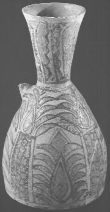
FIGURE I
petit vase, décor
de type cuerda seca (glaçure cernée par un trait de manganèse,
Mésopotamie, VIIe-VIIIe siècle)
à une matière
vitrifiable qu'on applique à la surface de la pièce. Ce procédé
était utilisé en Mésopotamie au IIe millénaire
et on ne sait toujours pas comment ce type de glaçure plombifère
a pu émerger simultanément en Egypte et en Chine. La couleur
la plus fréquente est le bleu turquoise obtenu par de l'oxyde de
cuivre. Pour en revenir au legs égyptien, les principaux éléments
du verre, la silice [grains
de sable, roches quartzeuses], et les carbonates
de potasse et de soude étant conçus de toute antiquité,
il n'est, dès lors, pas difficile de comprendre que l'origine du
verre doit être fort ancienne. Depuis longtemps, les Egyptiens avaient
chauffé dans des fosses creusées dans le sable, les cendres,
plus tard désignées sous le nom de cendres d'Alexandrie.
On fabriquait du verre à Thèbes et à Memphis dans
le temple de Phtha, probablement longtemps avant que les Phéniciens
en eussent établi des manufactures à Sidon. La présence
de quelque oxyde métallique
dans le carbonate alcalin, donnant naissance à un verre coloré,
devait réveiller l'attention des verriers, et donner lieu à
la découverte des verres colorés ou despierres
précieuses artificielles. Ainsi qu'on
l'a déjà dit [cf.
section sur le Mercure],
la fabrication du verre coloré est-elle plus ancienne que la fabrication
du verre blanc [qui constituait
à l'époque un haut secret]
car les éléments du verre tel qu'on les rencontre dans la
nature, sont presque constamment mélangés avec des oxydes
métalliques [c'est-à-dire
des Soufres, en terme d'alchimie].
Tous les historiens sont d'accord pour nous apprendre que les Egyptiens
fabriquaient de temps immémorial des objets de verreries incolores,
ou colorés en rouge, en vert, en bleu, en violet, etc. imitant le
rubis, l'émeraude, le saphir, l'hyacinthe, etc. La ville de Thèbes
était renommée pour les ouvrages en verre coloré qui
sortaient de ses fabriques, et qui s'exportaient au loin par l'intermédiaire
des Phéniciens et des Carthaginois. dès les temps les plus
reculés, c'était une branche importante du commerce qui se
faisait par la mer Rouge. Dans sa Description de l'Egypte
pendant l'expédition française [éd.
Panckoucke, 1820], M. Rozière
nous dit :
"J'ai
souvent trouvé dans les ruines des anciennes villes de la Thébaïde,
parmi les fragments de verre coloré dont elles abondent, quelques
nouveaux teints de diverses couleurs. Quelques-uns, offrant dans une de
leurs parties de belles nuances de pourpre, étaient, je crois, des
débris de cet ancien murrhin artificiel...Dans les hypogées,
on trouve des métaux mis en oeuvre, de speintures dont les couleurs
sont dues à des oxydes métalliques, des frittes, des verres,
des émaux, colorés par ces mêmes oxydes..."
Ces vases
murrhins, nous en avons déjà parlé [cf.
section sur la réincrudation],
étaient certainement constitués de spath fluor ; ce n'est
pas l'avis, apparemment, de Ferdinand Hoefer qui nous dit qu'ils n'on été
connus à rome que vers la fin de la république. Pline rapporte
que :
"Les
vases murrhins n'ont pas beaucoup d'éclat, bien qu'ils soient luisants.
On estime ceux qui sont de différentes couleurs, et qui offrent
des taches jaunes, rouges ou lactescents."
[XXXVII, 2]
Il devait s'agir
en tout cas d'une matière très fusible [ce
qui attesterait qu'il s'agit bien de spath fluor ou fluorine]
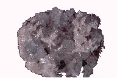
FIGURE
II
puisque ces vases
ne paraissaient pas pouvoir supporter une température élevée
sans se déformer ou même se fondre. Pline parle encore d'une
espèce de verre noir, qu'il appelle obsidien, à cause de
sa ressemblance avec la pierre qui porte ce nom :
"J'ai
vu des statues massives représentant l'empereur Auguste,
qui aimait beaucoup ce genre de verre. On le fabrique dans les verreries
où l'on colore le verre. On fabrique aussi du verre rouge de sang,
appelé hamatinon, puis le verre blanc, le verre murrhin, le verre
qui imite le saphir, l'hyacinthe ; enfin des verres de toutes couleurs.
Nulle matière n'est aujourd'hui plus maniable et plus propre à
prendre toutes les teintes."
Dans une contrée
de l'Arabie, voisine de l'Egypte, on fait, dit Diodore, du cristal par
le moyen du feu divin [upoqeioupuroV].
Ce cristal reçoit différentes couleurs par le dégagement
d'un esprit. On fabrique des émeraudes et des béryls dans
des forges d'airain. Toutes les couleurs sont... un effet de lumière.
[Diod. Sicil., II, edit.
Wesseling]
Rien, en fait, n'apparaît
plus obscur que l'histoire des pierres précieuses. Il est littéralement
impossible de se reconnaître dans le déluge des dénominations
telles que onyx, sardonyx, chrysoprae, aerizusaz,
cyanos, capnias, jasponyx, chryselectron, leucochryse, mélichryse,
astros, iris, alectorie, etc. [cf.
la liste que donne Pline en terminant son Hist. Nat., chap.
10, livre XXXVII]. Il serait pourtant
utile de savoir si l'anneau de Polycrate qui fut retrouvé par un
cuisinier dans le ventre d'un poisson, était une topaze ou un saphir,
ou si celui de Pyrrhus, sur lequel on voyait gravé Apollon et les
neuf muses, était un corindon ou un rubis...
3)- bref aperçu des alchimistes gréco-alexandrins
Marcellin Berthelot
dans sa Chimie des Anciens a montré toutes les connexions que l'alchimie avait entretenu avec les arts de l'orfèvrerie de même que Titus
Burkhardt [Principes et méthodes de l'art sacré. Lyon, Paul Derain, 1958 - Alchimie sa signification et son image du monde Milano, Arché, 1979] : les alchimistes sont d'abord
des orfèvres, verriers ou teinturiers
; ils se livrent à des expériences artisanales ayant trait
à la préparation des métaux, des couleurs et du verre.
La chimie d'alors n'était pas classée par les Arabes avec
les sciences ouvertes ou « exotériques » mais parmi
les cinq sciences occultes et se trouvait en contradiction formelle avec
la parole du Prophète. Cela explique que les textes qui s'y réfèrent
aient été rédigés dans un jargon inintelligible
et qu'en particulier les écrits attribués à Djabir - pour leur
partie alchimique du moins - aient été considérés comme «
incohérents ». Or, on sait que la verrerie,
la métallurgie et la minéralogie
dépendaient aussi de la chimie arabe. Djabir
(le pseudo Geber) fut le premier à pratiquer la séparation des sulfures
de l'arsenic et de l'antimoine
; Rhazès
découvrit entre autre le peroxyde
(sesquioxyde)
de fer. Le rapport entre la céramique
et l'alchimie est attesté par des travaux de J.M. Rogers qui signale
que des céramiques sphéroconiques que l'on trouve en grande
quantité près des fours des potiers sont des récipients
d'alchimistesdestinés
aux travaux de distillation. Ainsi sommes-nous dans
le bon chemin et devons-nous considérer que les importantes
mutations
reflétées par les céramiques abbassides
s'inscrivent
dans le champ de recherches consacrées à l'alchimie ;
cela
expliquerait en tout cas que dans l'Orient ancien, les fours de potier
aient été construits dans l'enceinte même des
temples
et des sanctuaires qui dépendaient des prêtres- mages,
véritables dépositaires des connaissances scientifiques,
alors de nature « ésotérique » et non «
exotérique ». Ces « alchimistes de Bagdad » sont
inséparables du grand courant de l'alchimie arabe, abordée
dans notre prima materia. Comme
le souligne Pierre Lory
[Alchimie
et mystique en terre d’Islam, Verdier, 1989 ; cf. encore : Robert
Halleux, La réception de l'alchimie arabe en Occident et Georges
C. Anawati, L'Alchimie arabe, dans Histoire des sciences arabes,
tome 3, Seuil, 1998, Sous la direction de Roshdi Rashed],
les Arabes l’ont conceptualisée dans une forme qui, après
eux, va s’imposer partout. Leur alchimie n’est pas seulement un art de
laboratoire, elle se propose aussi de dévoiler les lois cachées
de la Création et comporte une dimension mystique et philosophique
[il s'agit d'une forme de panthéisme
où le Ciel et la Terre sont liés comme l'exprime la Table
d'Emeraude, texte d'ailleurs qui semble plus tardif].
Si l’alchimie arabe revendique une origine égyptienne, sa pratique
est antérieure à la conquête de l’Égypte par
les Arabes en 639. C’est par les Syriens qu’ils ont reçu l’alchimie
grecque, mais leurs premiers maîtres dans cet art furent les Iraniens,
qui avaient hérité des traditions ésotériques
mésopotamiennes. Le premier alchimiste arabe connu, le prince omeyyade
Khâlid ibn Yazîd (?-704), fut initié par un Chrétien
d’Alexandrie, Morienus [appelé
aussi Morien le Romain, cf. Entretiens
de Calid à Morien, texte majeur qui nomme le «
fiel de verre »]. L’alchimie
connaît un rapide succès dans le monde islamique et les traités
grecs sont rapidement traduits. La figure la plus illustre de l’alchimie
arabe est Jâbir ibn Hayyân (mort vers 815), connu en Occident
sous le nom de Djabir. Il va mettre en évidence les concepts fondamentaux
du Grand Œuvre
[cf. Chevreul
là-dessus ; il est probable que les écrits alchimiques attribués
à Djabir sont apocryphes ; la Somme de Perfectionest
l'un des grands classiques de la littérature alchimique est
attribuée à Paul de Tarente ; on doit à Djabir
l'introduction du concept Arsenic, repris par Paracelse qui en
fera son principe Sel ; repris par Fulcanelli qui en fera le «
Corps
» de la Pierre].
On lui doit
aussi de nombreuses découvertes en chimie. Le « corpus
Jâbirien » compterait plus de trois mille traités
dont la plupart sont donc apocryphes. Ils sont probablement l’œuvre d’une
école qui se forma autour de ses enseignements [cf.
prima
materia]. L’alchimie arabe connaîtra
de nombreux maîtres, dont nous ne citerons que quelques-uns : Abu
Bakr Mohammed ibn Zakarya, dit al-Razi ou Rhasès
(Xe siècle)
; Senior Zadith, (Mohammed ibn
Umail al-Tamimi) ; ibn Umayl, (Xe
siècle), Abd Allah al-Jaldakî
(XIVe siècle).
Leurs textes pénétreront bientôt en Europe par l’Espagne
et marqueront profondément l’Occident latin.
[site
consulté sur ce § : http://www.rose-croix.org/histoire/histoire1.html]
Festugière résume ainsi le problème des origines de l'alchimie alexandrine :
« L'alchimie
gréco-égyptienne, d'où ont dérivé
toutes les autres, est née de la rencontre d'un fait et d'une
doctrine. Le fait est la pratique, traditionnelle en Égypte, des arts de l'orfèvrerie. La doctrine
est un mélange de philosophie grecque, empruntée surtout
à Platon et à Aristote, et de rêveries mystiques. » [La Révélation d'Hermès Trismégiste, vol. IV, Paris, 1944, p. 218]
Il semble, comme l'explique, Cristina Viano, que :
« ... la pratique des alchimistes est le fondement de leur appropriation de la philosophie grecque, et non l'inverse. » [in Viano (dir.), l'Alchimie et ses racines philosophiques, la tradition grecque et la tradition arabe, Vrin, 2005 - p.92 et sq.]
Sur l'apport de Platon à l'alchimie, cf. Chevreul.
4)-
A la recherche du Soufre des glaçures
Dans les céramiques
à décor incisé et jaspé, on relève des
glaçures vertes à l'oxyde de
cuivre, brun violine à l'oxyde de manganèse et jaune roux
à l'oxyde de fer. Les premières
faïences naissent du besoin de masquer la pâte de la céramique
sur laquelle elles sont appliquées : on intercale un engobe entre
les deux matériaux. On sait que les Egyptiens et les Assyriens utilisaient
déjà des oxydes opacifiants comme la roméite,
le quartz et la cristobalite. L'oxyde d'étain
était utilisé seul dans les glaçures alcalines ou
plombifères de façon à leur donner un aspect blanc
crémeux opaque (l'émail).
Ces glaçures stannifères sont à l'origine de la faïence.
Le cobalt provenait
de la région de Kâchân et dès le VIIIe
siècle, les Arabes l'utilisèrent dans les poteries : il était
connu sous le nom de « bleu mahométan ». De cette époque
naît l'accord parfait entre le bleu du cobalt et le blanc de l'étain.
De 890 à peu près datent ces céramiques de l'Iran
oriental et notamment des céramiques du Khorassân
(allusion hermétique
au chien du Corascène d'Artephius).
La faune illustrant ces céramiques est originale et laisse perplexe
beaucoup d'historiens ; on y voit des oiseaux à tête de lion,
des félins mi-ours mi-chien ou à tête d'aigle (griffons),
des lions au poitrail
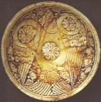
FIGURE III
coupe (Aigle héraldique.
Iran, région de Garrus, XIIe sècle)
proéminent
; les aigles héraldiques
sont les plus fréquents. Ces animaux sont typiques des symboles
alchimiques traditionnels et il serait utile qu'une étude essaye
de localiser exactement l'émergence de ces coupes. Cette céramique
est appelée « céramique de Garrus », les Iraniens
ayant dit aux marchands que ces produits provenaient de la région
où vivaient les Guèbres (gabr
: incroyant), terme employé
dans la littérature persane pour désigner les « adorateurs
du Feu » et les sectateurs de Zoroastre.
De cette époque datent aussi des coupes de Nichapour (FIGURE
III) et de Samarcande (FIGURE
IV) où le décor est peint
avec un engobe vert contenant des traces de
chrome ; il prend à la cuisson un bel
aspect jaune moutarde et le chrome fusant légèrement dans
la glaçure provoque un effet de lustre par irisation.
Faisons un saut dans le temps : voici la céramique seldjoukide (XIIe
siècle). On a alors des pâtes
siliceuses à base de sable qui permettent d'obtenir des objets à
paroi fine, pouvant rivaliser avec les porcelaines importées de
Chine. Dans la Syrie du nord, apparaissent des engobes désignés
plus tard sous le nom de « bol arménien » et se caractérisant
par un rouge dont la tonalité varie du rouge tomate au rouge brique,
obtenu grâce à de l'oxyde de fer (pensons
à la chienne d'Arménie
d'Artephius). Nous voyons ensuite l'Egypte
produire vers le XIIIe siècle des imitations parfaites
de céladon : pâte dense très siliceuse cuite à
1000°C et glaçure plombifère
|
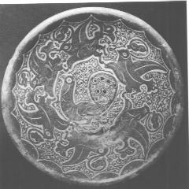
FIGURE
IV
jatte
campanulée (Xe siècle, Samarcande)
|
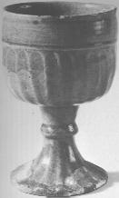
FIGURE
V
Calice
(décor moulé sous glaçure plombifère, Egypte,
XIIIe siècle)
|
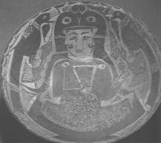
FIGURE
VI
grande
coupe creuse, (Xe siècle, Nichapour)
|
transparente teintée
par un mélange d'oxyde de fer et de chrome,
apanage des ateliers mamelouks. Remarquons la présence de l'oxyde
de chrome (Figures
IV, V, VI) qui montre de façon
indubitable que ce métal était utilisé -non reconnu
certes en tant que métal particulier avant sa découverte
par Vauquelin en 1797- au moins dès le Xe siècle.
Résumons
nos observations :
1)-
sur les pâtes : elles sont soit siliceuses, soit argileuses
; elles contiennent de la kaolinite, des sépiolites ;
2)-
sur les glaçures : elles sont faites d'oxydes vitrifiants,
surtout la silice (SiO2) sous forme de sables siliceux très
abondants dans tout le Moyen-Orient et expliquant la raison pour laquelle
le verre a été connu très tôt dans cette région
; moins fréquemment on trouve de l'oxyde de bore
(B2O3). Les oxydes fondants sont la soude
et la potasse,
les glaçures plombifères et stannifères comprenant
respectivement du plomb et de l'étain sous forme d'oxydes. On trouve
aussi des oxydes stabilisants comme la chaux
ou la magnésie (le cas
le plus fréquent). L'alumine
est également présente, plus difficile à dissoudre
dans le verre de la glaçure. Le plomb augmente la fusibilité
et joue un rôle de fondant qui s'ajoute aux effets de la potasse
et de la soude ;
3)-
la coloration des glaçures : la coloration ionique est due
à des oxydes colorants qui se dissolvent dans la glaçure
comme un sel dans l'eau. On trouve l'oxyde de cuivre,
le protoxyde de fer
et le peroxyde de fer.
L'oxyde de manganèse donne une couleur variant du pourpre et du
violet au bleu-vert. La coloration par pigmentation est donnée
par des pigments qui sont dispersés -mais non dissous -dans la glaçure,
comme la chromite FeO(CrAl)2O3
ou fer chromé. Des opacifiants sont également trouvés
tels que l'antimoniate de plomb, l'oxyde de chrome qui donne le vert et
le sesquioxyde de fer, de couleur rouge, dit bol arménien.
Conclusion
: au Xe siècle au moins, des éléments tels
que le manganèse et le chrome ainsi
que le magnésium, sous la forme d'oxydes,
étaient utilisés en céramique par les Arabes. De plus,
deux régions nommées sont citées aussi par Artephius
dans son Livre
Secret : le Khorassan
et l'Arménie.
5)-
La préparation des soufres
Quest-ce que le Soufre
en alchimie ? Certes d'abord, du soufre vulgaire, souvent à
l'état de fleur de soufre [cf.
section sur la
Pierre]
; ensuite de multiples combinaisons à l'état de sulfates
simples ou doubles qui entrent dans la préparation des Mercures
philosophiques ; au stade actuel de notre travail, les composés
alcalins sont à privilégier de même que le borax. L'utilisation
de plusieurs composés est probable. Certains Adeptes, dont Fulcanelli,
donnent le nom de mercure ou de soufre à une même substance
selon son aspect physique selon la période de l'oeuvre en cours
; il parle notamment du double soufre,
là où il faut manifestement entendre double
mercure. Enfin, le Soufre, pour nous, caractérise
la partie métallique de la Pierre, sous la forme d'une rouille
[ioV]
qui explique parfaitement les étranges commentaires d'E. Canseliet
[Alchimie, Etudes
de symbolisme alchimique] sur l'ionosphère
et les aurores boréales. De même que nous avons étudié
les Mercures [cf. section du
Mercure
philosophique], il nous faut étudier
la préparation des soufres, c'est-à-dire des « rouilles
» qui s'incorporeront, le moment venu, à l'écrin réalisé
par l'alumine
ou la silice
cristallisée. Dans les chapitres qui précèdent, nous
avons vu que l'utilisation de métaux inconnus des Anciens était
possible sous forme de traces ; il n'en faut pas plus pour préparer
le principe Soufre.
a)-
les émaux : déjà abordés
dans le chapitre sur le verre et ses usages [mais
sous l'angle du Mercure, i.e. du fondant],
nous les revoyons pour le soufre. Nous avons insisté sur le fait
que c'est d'abord le verre coloré qui avait été préparé
en raison des impuretés que ne manquaient pas de posséder
la silice ou les bases. La fabrication des verres de couleur marqua les
premiers pas de la verrerie antique : en effet, des oxydes métalliques
se trouvent dans le sable et une trace d'entre-eux suffit à donner
au verre une coloration plus ou moins intense. Les verres
colorés ont surtout trouvés
leur usage dans la confection des émaux et des vitraux. Le procédé
consistait, pour le peintre verrier, à utiliser des couleurs ; ces
couleurs sont composées de matières vitrifiables, d'émaux,
qui sont moins fusibles que le verre. Le peintre verrier peint des fragments
de verre et ces fragments sont portés dans un four puis chauffés,
en sorte qu'il se produise une fusion des couleurs et l'adhérence
au verre. Le dessin réalisé par le verrier se compose donc
de matières colorantes minérales, fondues et faisant corps
avec la substance du verre. En France, les premiers vitraux peints semblent
remonter au milieu du XIIe siècle ; c'était le
temps où écrivait le moine Théophile [cf.
le chapitre sur la verrerie] et nous
lui devons la mention et la description des procédés qui
servaient à mettre en pratique cet art des émaux, lointain
descendant de l'art sacré des prêtres égyptiens.
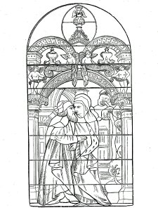
FIGURE
VII
(verrière
du XVIe siècle, ancienne abbaye de Ferrières, Loiret)
Le verre blanc peut
se colorer par suite de la propriété qu'ont les principaux
oxydes métalliques [oxydes
de fer, de cuivre, de plomb, d'or, de cobalt, etc.]
de se dissoudre dans le verre fondu en formant des silicates qui sont doués
d'une couleur propre et qui communiquent cette coloration au verre qui
les renferme. 1 à 2 % seulement d'un oxyde métallique mêlés
à du verre fondu, suffisent pour lui communiquer une couleur intense
[les
alchimistes ont toujours dit que pour faire l'oeuvre, un minéral
et un métal suffisait et que si le Mercure était pluriel,
le Soufre, lui, était singulier, c'est-à-dire « seul
» =
allusion à ioV].
Le pouvoir tinctorial
des oxydes métalliques est même si grand, que la masse vitreuse
paraît noire quand elle n'est pas soufflée à une très
mince épaisseur. C'en est au point que les verres colorés
sont composés de deux lames, l'une de verre blanc sur laquelle est
étendue une autre, de verre coloré : il s'agit des verres
doubles ou doublés.
b)-
les Soufres de l'antiquité
La connaissance que
les Anciens avaient des couleurs [c'est-à-dire
des teintures] est un point d'histoire
des Sciences important. On s'accorde à dire que les Grecs et les
Romains ont emprunté leur connaissance des couleurs aux Phénitiens
et surtout, aux Egyptiens. Cicéron, en parlant de l'école
grecque, dit qu'on ne faisait anciennement usage que de quatre teintures.
Pline [qui vivait environ 150
ans après Cicéron] remarque
que les quatre couleurs dont se servaient les peintres grecs étaient
le blanc, le noir, et les ocres jaune et rouge [Hist.
Nat., XXXV, 7]. Ce sont les
mêmes couleurs que l'on remarque dans les plus beaux chefs-d'oeuvre
de Raphaël et du Titien. Le Saint Marc et la Vénus offrent
des exemples remarquables de peintures dans lesquelles toutes les teintes
foncées sont produites par des ocres jaune et rouge, et par des
substances carbonacées [H.
Davy, Annales de chimie, t. XCVI].
Passons en revue les teintures antiques et voyons si les Anciens employaient
des oxydes de métaux non encore reconnus comme particuliers :
- les Pourpres
: s'il faut en croire Vitruve et Pline, la véritable pourpre d'un
rose foncé était contenue dans les vaisseaux d'une espèce
de mollusque. On y ajoutait un carbonate alcalin ; la matière colorante
est fournie par plusieurs espèces de janthines. On faisait également
la pourpre [rouge,
violet et rose foncé] avec la
garance et une autre plante nommée hysginum. H. Davy rapporte qu'on
a trouvé dans les bains de Titus, un vase de terre brisé
contenant une matière colorante ou laque d'un rose pâle, qui
pendant 1700 ans, s'est très bien conservé, excepté
la partie externe qui s'était un peu altérée au contact
de l'air. Il résulte d'après l'analyse que cette laque est
de nature organique, mêlée de silice, d'alumine et de chaux,
elle paraît être une matière organique non azotée.
Dans l'ensemble, la couleur pourpre n'était pas assurée par
des oxydes métalliques.
- les
Rouges et les Jaunes : le vermillon
était employé depuis la plus haute antiquité. Les
censeurs de Rome étaient, par leur fonction, obligés les
jours de fête, de faire peindre la face de la statue de Jupiter en
vermillon ; et les généraux romains avaient la coutume pendant
leur triomphe de s'en barbouiller le visage
[Pline,
XXXIII, 7 ; on peut se demander à cette occasion si Varius Avitus
Bassianus que Fulcanelli évoque dans les DM, II et
dont nous parlons dans la section des Gardes
du corps de François II ne serait pas fardé avec du vermillon].
Le vermillon était
également employé pour enluminer des caractères gravés
sur de l'or ou sur du marbre. Le minium des Latins [miltoV
des Grecs]
est tantôt le vermillon [sulfure
rouge de mercure], tantôt le
véritable minium [oxyde
de plomb] ; notons que dans la section
I sur les textes, nous avons eu l'occasion de parler de la nielle
[rouille du blé, que
l'on retrouve ici comme le miltoV].
Le minium proprement
dit - appelé aussi
secundarium parce qu'artificiel - était
préparé en grillant le minerai de plomb ; Pline savait qu'il
constituait une rouille métallique [Hist.
Nat., XXXVII, 7]. Parmi les
autres couleurs rouges et jaunes minérales, les auteurs nomment
les ocres [oxyde de fer jaune
ou rouge], l'orpiment et la sandaraque
[sulfure d'arsenic].
L'ocre jaune la plus estimée pour la peinture provenait de l'Attique.
Ces témoignages sont confirmés par les monuments qui nous
restent ; parmi les substances trouvées dans un grand vase de terre
contenant des couleurs mêlées avec de la glaise et de la chaux,
vase qui fut trouvé il y a 150 ans au moins dans une chambre des
bains de Titus, il y avait différentes espèces de rouge qui
furent analysées par H. Davy. L'une d'elles, d'un rouge vif, était
du minium ou de l'oxyde rouge de plomb ; une autre, d'un rouge pâle,
était une ocre ferrugineuse ; une troisième, d'un rouge pourpre,
était également une espèce d'ocre ; enfin une quatrième,
d'un rouge vif, était du cinabre. Dans un autre pot de terre, il
y avait trois espèces de jaune, dont deux étaient des ocres
mêlées avec des quantités variables de carbonate de
chaux, et le troisième, une ocre jane mêlée avec de
l'oxyde rouge de plomb.
- les Bleus
: nous ne parlerons ici que des couleurs bleues d'origine minérale.
Ces couleurs étaient à peu près exclusivement fournies
par les composés de cuivre et de cobalt et il est important de savoir
que ces deux métaux étaient confondus originairement sous
la même dénomination. Nous avons déjà parlé
du bleu égyptien dans la section chimie
et alchimie. Dans une excavation faite à Pompéi,
dans le mois de mai 1814, à laquelle H. Davy était présent,
on découvrit un petit vase rempli d'une couleur bleu pâle
: ce n'était autre qu'un mélange de chaux et de fritte d'Alexandrie.
Davy pense que le verre dont parle Vitruve
[Vitruve
assure que l'on avait un moyen d'imiter le bleu indien ou indigo, en mêlant
la poudre d'un verre coloré avec de la craie sélinusienne
ou annulaire]
était coloré
par l'oxyde de cobalt et que la matière était semblable à
notre smalt [arséniure
de cobalt]. Les vases d'un verre bleu
transparent qu'on trouve dans les tombes de la grande Grèce sont
teints avec le cobalt. Tous les verres bleus transparents grecs et romains
en contenaient [Davy, Annales
de Chimie, t. XCVI].
- les Violets
: Théophraste et Pline parlent d'une sorte de lichen que l'on regarde
comme identique avec l'orseille. Il ne s'agit pas d'un oxyde métallique.
- les Verts
: les couleurs vertes minérales des Anciens étaient toutes
des carbonates ou des acétates de cuivre.
- la chrysocolle
: cette substance dont nous avons déjà parlé à
plusieurs reprises, selon l'opinion de quelques historiens, serait le borax
[borate
de soude] qui sert à souder
les métaux. Vitruve parle dans son livre VII de la chrysocolle qui
n'est autre chose que du carbonate de cuivre, qui, mêlé à
des phosphates alcalins, servait aux orfèvres pour souder l'or [les
phosphates alcalins étaient fournis par l'urine].
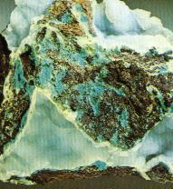
FIGURE VIII
(agrégat de chrysocolle,
Arizona, USA)
- les Noirs
et les Bruns : Dans un vase
antique rempli de couleurs mélangées, Davy trouva différentes
espèces de brun ; l'une d'elles avait la couleur du tabac, une autre
était d'un rouge brun, et la troisième d'un brun foncé.
Les deux premières se trouvèrent être des ocres mêlées
d'une matière organique [noir
de fumée] ; la troisième
contenait de l'oxyde de manganèse ainsi que de l'oxyde de fer. Il
est évident [et cela
a un intérêt, en alchimie, pour la Pierre dont le Soufre correspond
à un manganate] que les Anciens
connaissaient les mines de manganèse,
d'après l'usage qu'ils en faisaient dans la fabrication des verres
colorés. Deux échantillons d'un vase pourpre romain étaient,
d'après une analyse faite par Davy, peints avec de l'oxyde de manganèse.
- les Blancs
: Théophraste, Dioscoride et Pline décrivent la céruse
[blanc
de plomb] et en indiquent l'emploi
comme d'une couleur blanche la plus commune. Ils parlent aussi de différentes
espèces de craies et d'argiles destinées au même usage.
Il semble, pourtant, que Davy n'ait pas rencontré de céruse
dans l'analyse des couleurs anciennes.
c)-
les teintures modernes
Les principaux oxydes
métalliques [véritables
rouilles] employés pour colorer
le verre [mais que l'on retrouve,
selon nous, dans le grand oeuvre] sont
:
- pour le
bleu-saphir =
l'oxyde
de cobalt
- pour le bleu céleste =
le
bioxyde
de cuivre
- pour le vert-émeraude =
l'oxyde
de chrome
- pour le vert bouteille =
l'oxyde
de fer
des battiture, le protoxyde de cuivre
ou le cuivre métallique - pour le rouge-pourpre, pour le jaune à
reflet verdâtre =
le peroxyde
d'uranium - pour le jaune-orange =
le chlorure
d'argent - pour le jaune commun =
le verre
d'antimoine
- pour le violet =
le bioxyde
de manganèse
- pour le rose ou rouge commune =
les sels
d'or
ou l'oxyde de cuivre.
Quand on veut obtenir
une couleur composée, on mélange plusieurs oxydes ; c'est
ainsi que le verre noir se produit à l'aide des oxydes de manganèse,
de fer et de cobalt mélangés à parties égales
; le verre couleur émeraude, avec les oxydes d'uranium et de cuivre
; le verre couleur d'herbe, avec un mélange d'oxyde de cobalt et
d'oxyde de sulfure d'antimoine. M. Péligot, dans ses Douze
Leçons sur la verrerie, donne la composition des
substances employées pour produire la coloration du verre et du
cristal : ces substances constituent donc des Soufres possibles, utilisables
dans la préparation de la Pierre.
a)-
bleu : on ajoute au mélange
vitrifiable 1 à 3% d'oxyde de cobalt [corps
probablement connu des Egyptiens, cf. bleu arménien].
L'addition d'oxyde de manganèse [corps
connu des Anciens] donne une masse
plus violacée ;
b)-
violet : cette couleur se
produit avec 2 à 7% d'oxyde de manganèse et 1% d'oxyde de
cobalt ;
g)-
bleu céleste : on
ajoute 1% de bioxyde de cuivre à du verre ou à du cristal
riche en alcali. Si le verre est très siliceux, la couleur est verte
;
e)-
vert-émeraude : cette
coloration est fournie par 2 ou 3 ‰ de sesqui-oxyde de chrome. Cet oxyde
n'est dissous par le verre qu'en très petite quantité ;
z)-
vert-bouteille : on se sert
des battitures de fer, dont on ajoute 4 à 5 % à la composition
;
h)-
jaune : 4 à 5 % d'oxysulfure
d'antimoine [corps
qui correspond à la scorie de la calcination du sulfure d'antimoine
dont parle Eugène Canseliet, à chaque fois qu'il évoque
la stibine], qui est du verre d'antimoine
et 1 ‰ de pourpre de Cassius, fournissent le jaune-topaze ; on obtient
aussi cette nuance avec les peroxydes de fer [ou
fer oligiste, qui fournit l'hématite]
et de manganèse ; si ce dernier oxyde prédomine, la teinte
vire au brun violacé ; avec l'oxyde de fer employé en plus
grande quantité, on a le jaune d'or. Les tubes de verre qui, filés
à la lampe d'émailleur, donnent les fils servant à
tisser des étoffes de soie et de verre qui ressemblent aux brocards
d'or, sont colorés par ce mélange. Le sesqui-oxyde d'uranium
donne au verre une belle couleur jaune avec reflets verdâtres [verre
dichroïte] mais nous ferons l'impasse
sur l'uranium car il est très peu probable qu'il ait pu être
utilisé par les anciens alchimistes... Le jaune plus ou moins orangé
est fourni par du charbon très divisé ou la fumée
qui résulte de l'introduction de l'écorce de bouleau ou de
la corne dans la matière en fusion ; à noter que le verre
ne doit pas contenir de plomb dans ce dernier cas ; l'argent donne, à
la température de moufle, une belle coloration jaune-orangé
;
q)-
rouge et rose : on fond
dans un petit creuset du cristal ordinaire avec addition de
1 ‰ d'or à
l'état de chlorure. Le cristal présente l'aspect du cristal
ordinaire ; il a seulement une teinte un peu bleuâtre. On produit
également la couleur pourpre en appliquant sur des verres très
siliceux, sans plomb, du bioxyde de cuivre. Le carbonate de cuivre ou l'oxyde
bleu hydraté conviennent très bien pour cet usage ;
i)-
noir : cette couleur résulte
d'un mélange d'oxyde de cuivre, de cobalt et de fer. On l'obtient
aussi au moyen du soufre intrduit en nature dans la composition. Le verre
hyalite qu'on fait en Bohême est ainsi coloré. On ne peut
pas dire exactement le rôle que joue le soufre pour produire cette
coloration ; elle est peut-être due à la formation d'un sulfure.
La préparation
des verres colorés exige beaucoup de soins de la part des verriers.
Certains oxydes métalliques obligent à modifier la composition
des mélanges. Le rouge est une des couleurs les plus délicates
à reproduire. Les Anciens obtenaient cette couleur avec un éclat
extraordinaire. C'est le cuivre qui servait aux peintres-verriers du Moyen
Âge à produire le rouge. On admet que ce métal s'y
trouve sous forme de protoxyde mais il est probable qu'il existe sous forme
métallique. Nous allons à présent dire quelques mots
sur les couleurs des émaux
et leur préparation, qui se rapprochent davantage des préparations
alchimiques par incorporation de Terres :
- les Noirs
: le même oxyde sert pour faire les noirs et les gris. On fait du
gris en mettant la couleur mince et du noir en soutenant l'épaisseur.
Lorsqu'on précipite par le carbonate de soude [natron]
un mélange de sels de protoxyde de fer et d'oxyde de cobalt, et
qu'on laisse l'oxydation du comporé s'effectuer sous l'influence
de l'air atmosphérique, on obtient une combinaison des oxydes de
fer et de cobalt qui, suffisamment calcinée, fournit un oxyde noir
de très bonne qualité. On prend :
-
1 équivalent oxyde noir de cobalt (38 g)
-
g fer métal = 1 équiv. d'oxyde Fe2O3
(56 g).
On fait dissoudre séparément
l'oxyde de cobalt à chaud, le fer métallique à froid,
l'un et l'autre dans de l'esprit de sel [acide
muriatique ou acide chlorhydrique],
les deux dissolutions sont étendues d'eau, filtrées et réunies
; on précipite le mélange par le carbonate de soude en léger
excès [natron],
on lave à grande eau jusqu'à ce que tout l'oxyde de fer soit
passé à l'état de peroxyde de fer hydraté,
entièrement jaunâtre ; on dessèche et on triture avec
deux fois son poids de sel marin ; on calcine dans un têt à
rotir, à une chaleur rouge sombre, on lave à l'eau bouillante
et on fait sécher. Enfin, quand l'eau de lavage n'enlève
plus rien, on calcine de nouveau dans un creuset à une chaleur très
intense. L'oxyde ainsi formé est une combinaison définie
qui a pour formule : Fe2O3,CoO.
- les Verts
: l'oxyde de chrome est la base des verts ; on le combine avec l'alumine
pour lui donner de la transparence, avec l'oxyde de zinc pour le modifier
en jaune, avec l'oxyde de cobalt et l'alumine pour le transformer en vert
bleuâtre. L'oxyde de chrome [abordé
dans l'Introïtus, VI
de Philalèthe]
se prépare à l'état de sesqui-oxyde de chrome en enflammant
un mélange d'une partie de soufre pour deux parties de bichromate
de potasse [alun de chrome].
On place le mélange bien trituré dans un têt à
rotir, on fait au centre une petite cavité qu'on remplit de soufre
en fleurs [poudre de soufre,
cf. section sur la Pierre],
et auquel on met le feu. Le produit de la combustion au contact de l'air
est de l'oxyde de chrome qu'on lave à l'eau bouillante ; il n'est
point nécessaire d'agiter pour renouveler les surfaces du mélange
incandescent ; la combustion se propage d'elle-même jusqu'au centre
de la masse. L'oxyde de chrome qui résulte de la réduction
du chromate de potasse est lavé, séché et calciné
de nouveau, pour éliminer un peu de soufre qui n'a pas été
brûlé. Il est alors d'un très beau vert. Cet oxyde
est combiné avec l'alumine pour préparer un vert-jaune transparent
: on prend de l'alumine hydratée ; quand on précipite en
présence de beaucoup d'eau par l'ammoniaque caustique de l'alun
ammoniacal (1) ou potassique, on obtient
un hydrate d'alumine à 62 % d'eau. C'est à cet hydrate que
l'alumine est emprunté ; on peut prendre pour le calciner, après
porphyrisation :
-
1 équiv. sesqui-oxyde de chrome vert (76 g)
-
1 équiv. alumine hydratée Al2O,9HO (135 g)
on lave à l'eau
bouillante pour extraire le chromate de potasse qui se forme aux dépens
d'un peu de la potasse retenue par l'hydrate d'alumine, ou conservé
par l'oxyde de chrome que les eaux de lavage, même bouillantes, n'en
débarassent pas toujours complètement. Il y a là quelque
chose d'analogue à ce que Chevreul a désigné sous
le nom de phénomène
de teinture.
Le vert bleuâtre
s'obtient en suivant la même méthode et d'après les
mêmes principes ; on prend à cet effet :
-
0.5 équiv. sesqui-oxyde de chrome (38 g)
-
1 équiv. d'oxyde de cobalt (38 g)
-
1 équiv. d'alumine hydratée (135 g)
on calcine et on lave
à l'eau bouillante ;
- les Bruns
: Lorsqu'on combine les peroxyde de fer et l'oxyde de zinc, en présence
de quantités plus ou moins importantes d'oxyde de cobalt et d'oxyde
de nickel [inconnu
des Anciens], on obtient des oxydes
bruns plus ou moins foncés, plus ou moins chauds, qui sont d'une
grande utilité dans la peinture sur verre. On prépare ainsi
du brun rougeâtre, du brun de bois, du brun-sépia e du brun
noirâtre. On prépare séparément, pour les réunir
ensuite, les dissolutions suivantes dans l'esprit de sel :
-
2 équiv. de fer = 1 équiv. sesqui-oxyde de fer Fe2O3
(16 g)
-
1 équiv. de zinc = 1 équiv. d'oxyde de zinc ZnO (33 g)
auxquels on ajoute de
l'oxyde de cobalt (2 g). On traite comme dit plus haut, si ce n'est que
l'on ne pratique qu'une seule calcination. L'oxyde lavé, qui a pour
formule Fe2O3(ZnO,CoO)
est d'un beau brun rougeâtre et d'un ton chaud. Le brun de bois et
les autres bruns nediffèrent que par la quantité d'oxyde
de cobalt :
couleur
|
bois
|
sépia
|
noirâtre
|
fer
|
56
|
58
|
56
|
zinc
|
33
|
33
|
33
|
oxyde (CoO)
|
4
|
12
|
38
|
Dans ces
préparations, la nuance brune est maintenue par la présence
de l'oxyde de zinc ; on obtient avec le fer seul et le zinc le ton qu'on
nomme brun-jaune. Ces oxydes exigent du temps et des soins minutieux ;
la préparation de certains d'entre-eux était peut-être
l'un des secrets des prêtres égyptiens...
Lorsqu'on calcine la couperose à un feu assez violent, il reste
un oxyde de fer violâtre [cf.
la couperose verte dans la
section sur chimie et alchimie].
Ce corps n'a plus de transparence et mêlé sur le verre à
un fondant, il adhère en faisant office de corps opaque ; il est
noir par transparence et sert à faire les ombres des draperies et
des chairs ;
- les Rouges
: les carnations s'obtiennent au moyen du colcotar calciné avec
précaution en présence de quantités variables d'alun
ou de sulfate d'alumine qui lui communique une certaine translucidité.
Cette couleur est l'une des plus délicates à obtenir ;
- Couleur
d'or : le précipité
pourpre de Cassius [cf.
voie
humide]
sert à obtenir les couleurs dites carmins, pourpre et violet. Le
pourpre de Cassius a été traité à fond dans
la section consacrée à la voie humide. L'utilisation des
chlorures d'étain consttiue, en effet, la base des dissolutins auriques,
qui permet d'avoir accès à ce fameux pourpre.
Préparation
du pourpre de Cassius
Pour préparer
le pourpre de Cassius d'une manière certaine, on prend 144 cc d'esprit
de sel et 72 cc d'eau forte [aqua
sicca]. On les mêle ensemble
; on pèse dix fois 2 g d'étain pur laminé qu'on met
en réserve pour les faire dissoudre dans l'eau régale. Pour
cela, 120 cc d'eau régale sont répartis dans 10 petites bouteilles,
12 cc chacune ; on étend de 0.5 g d'eau froide pour modérer
l'action, et on ajoute par petites fractions l'étain métallique
qu'on a fait laminer pour l'avoir plus facilement soluble. Ce qui reste
d'eau régale est versé sur 3.2 g d'or pur, et quand la dissolution
est complète, on étend d'assez d'eau pour former 500 cc ;
50 cc de cette dissolution sont étendus de 14 l d'eau précipités
successivement par chaque dissolution d'étain. Les précipités
sont mêlés, lavés à l'eau bouillante, et réunis
5 par 5 sur des filtres pour qu'ils se ressuient. Quand le pourpre
est suffisamment raffermi, on étend le filtre sur une glace, le
pourpre en contact direct avec le verre ; on essore sur l'envers avec un
linge absorbant, et, ramassant le précipité pâteux
avec un couteau à palette, on le place dans un vase, et on le recouvre
d'eau pour le conserver humide jusqu'au moment où l'on veut le transformer
en couleur. On y ajoute alors du fondant et la quantité voulue de
chlorure d'argent. |
- les Bleus
: le plus beau d'application qu'on puisse faire est tiré du cobalt
: c'est de l'aluminate de cobalt. Pour le préparer, on fait dissoudre
à l'état de nitrate :
- 1 équiv.
de carbonate de cobalt (60 g)
- 1 équiv.
d'alumine hydratée (180 à 135 g)
on évapore à
siccité et on calcine. Le résidu bleu qui reste au fond du
creuset possède une magnifique nuance outremer qu'on peut rendre
turquoise en ajoutant au mélange une petite quantité d'hydrate
d'oxyde de chrome. L'aluminate de cobalt ainsi formé correspond
à la formule Al2O3,CoO.
6)-
Le sulphur du lapis
C'est étudier
en détail les caractères physiques et chimiques des pierres
précieuses, puisque, le lecteur doit le savoir, nous pensons que
l'objet des alchimistes était de réaliser des « amalgames
ou des alliages philosophiques »
qui ne peuvent être que des pierres silicatées et alumineuses
s'approchant de certaines gemmes dites orientales.. Entendons-nous bien
: le but poursuivi par les alchimistes dignes de ce nom [nous
excluons donc les illuminés, les fous, les malhonnêtes et
les mercantis] a été
d'imiter la nature dans ses oeuvres minérales les plus accomplies
que les hommes appellent pierres rares et cristallines, aussi nommées
gemmes orientales. Pour arriver à ces synthèses de pierre
artificielle [mais pas factices
ni frauduleuses] des centaines d'années
de travail ont été nécessaires et, ainsi que nous
l'avons dit dans d'autres sections, l'alchimie a progressé au cours
des siècles. Le divorce entre la chimie et l'alchimie est
intervenu après la mort d'Isaac Newton (1,
2,
3)
; à une époque intermédiaire, Becher
a posé les bases de la deuxième alchimie, en supputant l'existence
de deux éléments, l'Air et l'Eau et de trois
terres : la vitrifiable, l'inflammable et la mercurielle. Stahl
s'est appuyé ensuite sur les traavux de Becher pour mettre au point
la théorie du phlogistique, laquelle fut définitivement supplantée
par les travaux de Lavoisier ; Lavoisier
a rendu définitivement caduque la théorie d'Aristote sur
les quatre éléments ; dès lors, la possibilité
même des transmutations alchimiques s'avérait insoutenable
; pour autant, ainsi que nous l'avons vu dans le chapitre sur les transmutations,
certaines opérations réalisées par des alchimistes
comme Philalèthe
ou par le groupe réuni autour de Lascaris ont donné du fil
à retordre à la critique... Nous considérons néanmoins
que ces transmutations n'ont jamais été réalisées
et qu'il s'agit de chimères ; elles ont permis de voiler le sens
exact des opérations alchimiques et le but poursuivi par les alchimistes
: la sensation d'être démiurge
en réalisant en quelques jours des opérations que la nature
met des millions d'années à accomplir. Cela pose bien sûr
des problèmes d'ordre historique dans la mesure où les oxydes
métalliques des pierres précieuses
correspondent souvent à des métaux qui n'avaient pas été
reconnus comme particuliers ; nous savons néanmoins que les Anciens
ont utilisé le chrome,
le zinc et le
manganèse
de cette manière et c'est ce en quoi nous intéressent tant
les études chimiques sur la composition centésimale des céramiques
antiques.
On peut imaginer
que certains groupes d'Adeptes aient réuni au fil des années
et des siècles des procédés d'obtention de certaines
couleurs,
aient localisé la provenance des matières
premières et aient pu ainsi, en liaison
avec leurs connaissances dans l'art du verre et de la poterie, des fondants
également, opérer la conjonction
de substances dont ils savaient pertinamment qu'il ne s'agissait pas seulement
de verre coloré. On le sait, car Pline mentionne bien le fait qu'il
était possible de distinguer une pierre artificielle d'une pierre
naturelle. Dans ce but, on se servait d'une pierre dure siliceuse, qui
devait entamer ou rayer l'une et laisser l'autre intacte, car - ajoute
Pline - la matière des pierres imitées est plus tendre. On
les distinguait également au poids ainsi qu'à d'autres caractères
physiques extérieurs ; Pline assure enfin que toutes les pierres
précieuses, vraies ou fausses, sont rayées par le diamant
[Hist. Nat., XXXVII,
4]. Ainsi donc, les Anciens étaient-ils
capables d'observer si la matière qu'ils produisaient était
ou non rayable
par le diamant ou le rubis : il est clair qu'à travers des milliers
d'expériences, la première fois que la matière n'a
pas été rayée par le rubis ou la topaze, les Adeptes
pouvaient à bon droit estimer qu'ils avaient réalisé
des pierres singulières qui étaient autre chose que du verre
coloré ou du cristal coloré. Nous avons déjà
parlé un peu des pierres précieuses dans la section chimie
et alchimie mais il vaut qu'on s'y attarde tout spécialement
ici, puisque c'est la qualité même de ce qui fait une gemme
précieuse que nous analysons ici : sa teinture ou si l'on préfère,
son Soufre.
a)- Historique
L'examen attentif
d'une roche brillante, cristalline, a pu faire naître une série
d'observations du plus haut intérêt. Mais, ces observations
se sont d'abord primitivement arrêtées aux objets qui, par
leur éclat et leurs teintes variées, attirent les regards,
non seulement des premiers hommes, mais même de certains animaux,
tels que les corbeaux, les pies, etc. De façon extraordinaire, mais
finalement parfaitement rationnelle, la connaissance des pierre précieuses
- comme celle du verre coloré - a donc dû précéder
celle des roches communes - et celle du verre blanc -. Il paraît
que c'est la branche la plus ancienne de la minéralogie. Il est
de fait qu'on éprouve de l'éblouissement simplement à
évoquer les pierres précieuses pour la poésie qu'elles
inspirent avant de penser à leur valeur vénale. Ce sont,
littéralement parlant, les fleurs de la minéralogie, épanouies
par un travail extrêmement lent dans les entrailles du globe. Il
s'agit, au vrai, des étoiles des régions ténébreuses
que l'on compare [surtout dans
les allégories alchimiques]
aux étoiles du ciel et qui expliquent, pour partie, certaines allusions
de la Table d'Emeraude.
La première chose à dire, pour ceux qui ne sont pas initiés
aux curieux phénomènes de la cristallisation, ce sont les
apparences diverses que présentent les corps composés des
mêmes éléments et qui ne diffèrent seulement
que par la disposition de leurs molécules. Il paraît étrange,
à première vue, que les plus gemmes orientales ne soient
au fond que du charbon,
de l'argile,
du sable, en
un mot des matière grossières [dont
l'origine justifie pleinement les commentaires des Adeptes]
que nous foulons aux pieds lorsque nous marchons sur la voie publique.
L'allégorie peut-être la plus évidente est représentée
par l'emblème XLII de l'Atalanta
fugiens de M. Maier que l'on ne se lasse pas d'admirer
: la matière première y est en effet figurée par des
traces de pas ; l'artiste se doit d'imiter la nature et la suivre à
la trace.

FIGURE
IX
Rien pourtant n'est
plus vrai ; car la base de toutes les pierres précieuses se trouve
dans le carbone ou charbon que tout le monde connait [et
que tout le monde ignore aussi] ; dans
l'alumine que la terre glaise nous présente presque pure [kaolin],
et dans la silice qui pave les rues et que l'on peut voir à profusion
sur nos plages. Qui eut cru possible qu'une même substance, la silice,
aurait pu un jour constituer l'un des objets les plus précieux des
alchimistes
en même temps que l'objet le plus précieux de la communication
moderne : en effet, sans silice [silicium],
pas de micro-processeur possible, pas de transistor possible, pas d'informatique
possible...Cela nous engagerait trop loin d'en parler mais on ne peut que
tomber sous le charme de cet aspect quasiment magique du monde moderne
où le microcosme rejoint de façon si singulière le
macrocosme et donne comme raison à la Table
d'Emeraude.
La cristallisation
est un des phénomènes les plus curieux que présente
la nature : des atomes, des molécules, s'attirent réciproquement
et s'unissent pour former, non pas un corps amorphe, mais un corps régulier
et symétrique : un cube, un prisme, etc. Les cristaux peuvent être
transparents, translucides ou opaques et présenter toutes les couleurs
connues [queue de paon].
Les formes cristallines sont très nombreuses mais des rapports essentiels
entre ces dispositions existent et ce fut Haüy
qui découvrit la loi de symétrie à laquelle sont subordonnées
toutes les formes cristallines. C'est Linné
qui paraît avoir compris le premier l'importance de l'étude
des cristaux et Romé de Lisle publia en 1772 le premier traité
de cristallographie ; cependant il ne vit dans les cristaux que des corps
isolés. Haüy avait reconnu à Paris, en 1781, presqu'en
même temps que Bergmann à Berlin, qu'un certain nombre de
minéraux avaient la propriété de se casser suivant
des lames, i.e. cliver.
Cette découverte est devenue la base de la minéralogie géométrique.
Haüy fit de la cristallographie une science rigoureuse et c'est à
dater de ses travaux que l'on classe les formes cristallines en six groupes,
dont chacun est caractérisé par son système d'axes.
On appelle ainsi certaines lignes idéales que l'esprit doit concevoir
comme passant dans l'intérieur du cristal et par rapport auxquelles
tous les éléments, faces, arêtes, sommets, sont disposés
symétriquement ; ainsi, tous les cristaux qui ont les mêmes
axes présentent une même symétrie qui constitue le
caractère propre au groupe. Nous voyons déjà réapparaître
la formule « solve
et coagula » propre à
l'alchimie dans la façon dont des corps peuvent cristalliser : la
dissolution, la fusion, la volatilisation. Le tout est que la réorganisation
des molécules du corps se déroule lentement, suivant l'un
de ces trois processus.
- Ainsi, si l'on fait dissoudre
un corps dans un liquide, puis qu'on évapore convenablement la dissolution,
et qu'on l'abandonne à elle-même, on apercevra bientôt
des cristaux se déposer au fond et sur les parois du vase et présenter
des facettes d'un poli et d'un brillant si remarquables, qu'on les croirait
travaillées par la main d'un lapidaire ;
- Au lieu de faire dissoudre un corps, on peut le faire fondre
dans un creuset et l'abandonner de même à un refroidissement
lent et tranquille, et au moment où la surface supérieure
commencera à se solidifier, il faudra percer la croûte qui
se forme, renverser le creuset sens dessus dessous pour en faire sortir
les parties intérieures qui sont encore liquides ; alors nous aurons
de même de magnifiques cristaux
[cela
évoque presque mot pour mot certains propos de Fulcanelli sur l'obligation
que l'on a de renverser le composé et les allégories sur
le renversement des pôles et sur le déluge ; ces allégories
sont évoquées à de multiples reprises dans les différentes
sections auxquelles nous laisserons le lecteur se référer
(1, 2,
3)
; de même cette coagulation de la surface évoque invinciblement
la rémore et la salamandre de De
Cyrano Bergerac].
En traitant du soufre
de cette manière, par exemple, on verra les parois du creuset tapissées
d'une multitude d'aiguilles dorées qui ne sont que du soufre cristallisé
;
- On peut encore obtenir la cristallisation d'un corps en le réduisant
en vapeur
dans un vase où cette vapeur puisse revenir à l'état
solide par un refroidissement suffisant. Par exemple, en volatilisant de
l'indigo, on obtiendra à la partie supérieure du creuset
couvert, des cristaux sous forme d'aiguilles d'un bleu magnifique ; la
même chose se réalise lors de la volatilisation du zinc, qu'on
appelle alors pompholix ou laine
des philosophes.
Toutefois, cette
cristallisation n'opèrera pas si elle est contrariée par
un refroidissement trop subi, un mouvement étranger. La glace et
ces belles arborisations que l'on peut admirer sur les vitraux des fenêtres,
n'est autre chose que de l'eau cristallisée
[cet
arrangement cristallin se présente comme des étoiles à
six rayons, ressemblant à une fleur à six pétales,
formant deux à deux des angles de 60° ; d'autres étoiles
s'embranchent de nouveau toujours sous le même angle de 60°,
réalisant des structures fractales, que Benoît Mandelbrot
fut le premier à formaliser sous l'angle mathématique].
On connaît
un procédé pour garder la trace - ou le squelette - de ces
cristaux : on soumet à une basse température une lame de
verre, disposée horizontalement et couverte d'une couche mince mélangée
à du minium [oxyde de
plomb, rouge]. Pendant la congélation,
les parcelles de minium sont entraînées par les petits cristaux
en formation et l'on obtient ainsi des figures en forme d'aiguilles, d'aigrettes,
de feuilles de fougère, etc. La fusion et l'évaporation ultérieure
de l'eau laissent le minium en place : il suffit ensuite de vernir la plaque
pour conserver indéfiniment les figures obtenues. M. Alban a réalisé
des observations microscopiques sur la précipitation des métaux
les uns par les autres. Il a été conduit aux deux conclusions
suivantes [Comptes rendus
Acad. Sci., t. I, XXIV] :
- toutes les fois où un métal est précipité de
ses solutions salines par un autre métal, le métal affecte
une forme arborescente, distincte pour chaque métal ;
- toutes les fois que l'on fait cristalliser un sel dans des circonstances
appropriées, la cristallisation affecte une forme arborescente,
différente pour chaque sel.
b)-
les cristaux et les Pierres
La production artificielle
des cristaux et des minéraux a été réalisée
par les minéralogistes français du XIXe siècle.
Pour parvenir à reconnaître les phénomènes chimiques
et physiques qui ont présidé à la formation des substances
minérales et à leur cristallisation, on a donc cherché
à imiter la nature. Nous allons ici nous attacher principalement
aux minéraux qui cristallisent
et tout spécialement à des roches dites rares : les pierres
précieuses. Nous avons déjà
abordé cette partie dans la section sur le Mercure
et allons spécialement nous attacher au développement du
Soufre qui, de toute façon, est congénère du Mercure.
C'est Ebelmen qui
a eu l'idée d'étendre le procédé par dissolution
et évaporation à la voie sèche afin de provoquer la
cristallisation de substances conjointes. Des fondants tels que le borax
et des phosphates alcalins ont été employés : ils
se révèlent être de véritables dissolvants,
à une haute température, pour les oxydes métalliques
[i.e. les Soufres].
Ebelmen, après avoir dissous de l'alumine dans de l'acide borique,
est parvenu à la faire cristalliser en faisant évaporer lentement
l'acide à la température des fours à porcelaine de
la manufacture de Sèvres et il a obtenu ainsi du corindon cristallisé
[M. Gaudin
était déjà parvenu avant 1848 à faire cristalliser
l'alumine et à fabriquer du corindon
rubis, en fondant de l'alun ammoniacal au
feu de chalumeau à gaz détonnant : en témoigne sa
Formation
artificielle des minéraux : lentille en cristal de roche fondu,
par M. Gaudin, Comptes Rendus Acad. Sci., t. V, 1837].
On doit à
Leblanc, à Gay-Lussac et à Beudant [Sur
les causes qui peuvent faire varier les formes cristallines d'une même
substance, Annales de Chimie et de Physique, t. VIII],
un grand nombre d'observations sur les cristallisations qui s'opèrent
dans les laboratoires.Par des expériences multiples, on a reconnu
quelques-unes des circonstances et des conditions qui influent sur la forme
extérieure des cristaux
[ainsi
: le soufre qui cristallise par fusion sous forme d'aiguilles prismatiques
à base oblique, passe en se refroidissant à une autre structure
qui appartient à la modification du soufre octaèdre ordinaire].
Ces causes sont assez
nombreuses
[différents
états de concentration de la dissolution, degré de température,
température extérieure et pression atmosphérique,
nature (++) du dissolvant, matières étrangères contenues
dans l'eau mère].
Ce sont les matières
étrangères -apparentées au principe Soufre- auxquelles
on va surtout s'attacher (le
dissolvant a été vu dans la section du Mercure).
Certaines de ces substances étrangères ont pu être
entraînées par l'eau mère et retenues dans la cristallisation
du sel, tandis que les autres n'ont agi que par leur présence, et
sont restées en dehors du cristal qui était en voie de formation.
Parmi les substances que contiennent les eaux-mères, et qui peuvent
s'incorporer au cristal qui se forme [nous
sommes en plein dans notre sujet],
on doit distinguer avec Beudant les mélanges
mécaniques (I)
de particules pulvérulentes, en suspension dans le liquide, et les
mélanges
chimiques (II) de molécules
dissoutes dans ce même liquide. Les matières du premier genre
(I) peuvent se retrouver dans le cristal en parties plus ou moins grossières
et plus ou moins fines, simplement interposées par couches entre
celles du réseau cristallin [comprenez
du Sel ou Corps,
assimilé à la « résine de l'or »],
ou bien retenues comme par une sorte d'affinité capillaire, dans
les interstices des molécules. Celles du second genre (II) sont
des substances isomorphes, ou tout au moins plésiomorphes, avec
la substance principale qui cristallise, qui peuvent entrer, à l'état
moléculaire, dans la composition des couches et des files de molécules
du cristal même, et qui concourrent ainsi à former une cristallisation
mixte.
- L'influence des mélanges mécaniques (I) consiste à
diminuer la transparence du cristal, à lui donner une couleur accidentelle
[c'est
cette couleur ou teinture
qui est recherchée en alchimie : elle est identifiée à
l'Âme ou
principe Soufre], et à rendre
généralement sa forme plus simple, et quelquefois plus nette
et plus régulière qu'elle ne le serait si le cristal était
parfaitement pur [ces impuretés
métalliques sous forme de rouilles
constituent ainsi l'élément fondamental de la Pierre].
C'est ce qu'a constaté
Beudant sur l'alun et le sulfate de fer [vitriol
vert dont nous parlons dans la section chimie
et alchimie], en les faisant cristalliser
au milieu d'un précipité pulvérulent de sulfate de
plomb [voici qui rappelle plutôt
les procédés spagyriques].
Dans la nature,
on a remarqué depuis longtemps que les cristaux de quartz hyalin,
mélangés mécaniquement d'oxyde de fer ocreux, jaune
ou rouge de même que ceux d'axinite mêlés de paillettes
de chlorite, et surtout ceux de calcaire, pénétrés
de grains de sable quartzeux, ont une forme des plus simples et des plus
régulières [ainsi,
on voit que l'intrusion de Soufres permet d'obtenir comme un « modelé
» de la Pierre qui semble augmenter ou accroître sa capacité
cristalline].
- L'influence des matières qui cristallisent ensemble (II) et qui
se mélangent dans une cristallisation commune, n'est pas moins manifeste
que celle des particules simplement interposées ; elle est même
beaucoup plus sensible. En général, les mélanges chimiques
et cristallins agissent moins pour troubler la transparence du corps [il
s'agit aussi du Corps,
en terme hermétique], mais ils
contribuent aussi à modifier sa couleur et ils produisent quelque
modification dans la valeur des angles
du cristal. Enfin, la nature et les proportions des substances mélangées
déterminent ordinairement des changements dans la configuration
extérieure, de telle sorte que les mêmes formes correspondent
souvent à des conditions de mélange tout-à-fait semblables.
On doit à Beudant, Leblanc et Mitscherlich un très grand
nombre d'observations sur les mélanges cristallisés des sulfates
hydratés de cuivre, de fer et de zinc.
La nature particulière
du liquide, au milieu duquel le cristal s'est formé, produit souvent
une modification de forme du cristal, bien que celui-ci ne lui ait emprunté
aucun élément étranger. Des sels, dissous dans le
liquide, et qui ont refusé de s'incorporer au cristal, ont pu agir
par leur présence seule
[Fulcanelli
ne dit-il point que « rien d'étranger » ne doit être
ajouté au Mercure ; souvenez-vous aussi que des étrangers
étaient sacrifiés au culte d'Artémis
; pensez enfin à la parabole du massacre
des Innocents de N. Flamel, etc.].
Il faut également
évoquer la nature des parois des vases qui contiennent les dissolutions
salines : ainsi, une solution cristallise plus rapidement dans un vase
de terre poreuse
que dans un verre ; le poli des surfaces, leur porosité ou perméabilité
plus ou moins grande, paraissent être les causes auxquelles on peut
attribuer ces différences. De même intervient la position
particulière des cristaux déjà formés : Leblanc
est ainsi parvenu à faire grossir des cristaux à volonté
dans un sens ou un autre, en changeant convenablement et à plusieurs
reprises leur position
au fond du vase. Enfin, la solution mère oblige le cristal à
adapter l'orientation de ses axes : si, d'une dissolution d'alun, qui a
donné des cristaux cubiques, on retire l'un de ces cristaux pour
le porter dans une autre solution mère, capable de donner des cristaux
octaèdriques, on verra le premier cristal se modifier
progressivement par décroissance sur les angles, d'une manière
conforme à la théorie de Haüy, et parvenir bientôt
à la seconde forme, en passant par la forme intermédiaire
du cubo-octaèdre.
Beudant a observé
par ailleurs que pour obtenir des cristaux réguliers d'un sel en
dissolution, il fallait que la solution fût dans un état idoine
de concentration
[cela
n'est pas sans rappeler le problème du poids de nature et du poids
de l'art, que l'artiste doit appliquer : aux dires de fulcanelli, le poids
de nature ne peut pas être déterminé par l'homme...].
Il existe un grand
nombre de minéraux que l'on peut reproduire par la voie sèche
et qui cristallisent en passant de l'état liquide ou de fusion,
ou bien de l'état de vapeur ou de sublimation, à l'état
solide. Nous avons évoqué dans la section sur le Mercureles
produits cristallisés à partir des scories des laitiers de
hauts-fourneaux, qui ont été étudiés par Haussmann
et Mitscherlich [on y trouve
notamment des oxydes, des silicates et des sels métalliques qui
peuvent nous intéresser]. C'est
dans ce cadre qu'ont été notamment reproduits le péridot
et le pyroxène. MM. P. Berthier et E. Mitscherlich ont réalisé
en 1823 un grand nombre d'expériences sur la formation et la cristallisation
par voie de fusion ignée des silicates : en mettant dans un creuset
les proportions de base et de silice nécessaires pour former un
silicate fusible, tel que le pyroxène et le péridot, ils
ont bien vu ces substances se produire et cristalliser par le
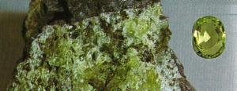
FIGURE
X
(agrégat
d'olivine de l'île de Ténériffe [Îles Canaries],
et péridot taillé, Arizona, USA)
refroidissement [nous
avons rendu compte des expériences les plus cruciales dans la section
sur le Mercure].
Parmi les minéraux
produits par fusion, on doit d'abord distinguer les résultats obtenus
par M.A. Gaudin [Formation
artificielle des minéraux ; Comptes Rendus Acad. Sci.,
t. V, 1837].
Nous noterons que
que l'une des expériences de Gaudin a eu lieu en présence
d'un autre savant, Dufrenoy, qu'il relate ainsi :
«
Dans une expérience qu'il a répétée en ma présence,
il a fabriqué des cristaux de rubis, dans lesquels j'ai reconnu
la forme rhomboédrique du corindon et son clivage triple. M. Malaguti
qui a fait l'analyse de ces cristaux, a constaté qu'ils étaient
composés de 97 d'alumine et de 2 de silicate de chaux, composition
analogue à celle du rubis. La potasse a été volatilisée
par la haute température développée dans cette opération.
Les expériences de M. Gaudin remontent à 1837 ; cette date
donne la priorité à cet ingénieux physicien, pour
la production artificielle du corindon ».
Ebelmen, dont nous
évoquons les travaux dans la section sur le Mercure, a eu l'idée
d'étendre à la voie sèche, aux hautes températures,
le procédé -très connu aux températures ordinaires-,
par lequel on dissout un corps solide dans un liquide, et où l'on
fait évaporer lentement le dissolvant. En particulier, en fondant
avec du borax de l'alumine mêlée d'un peu de chromate potassique
ou un mélange d'alumine et de magnésie [voyez
ce qu'en dit Fulcanelli], il a obtenu
de beaux cristaux de corindon et de spinelle. En opérant toujours
dans les mêmes conditions et en faisant varier la nature des substances
mélangées, il a fait ainsi cristalliser -à des températures
de beaucoup inférieures à leur point de fusion- un bon nombre
de substances insolubles et infusibles parmi lesquelles on peut citer le
fer chromé, la cymophane et l'émeraude [cf.
section sur le Mercure pour des détails de technique opératoire].
Nous allons aborder
à présent un point de vue singulier sur la cristalisation
présenté par l'un des savants du XIXe siècle
; ce point de vue a paru avoir assez d'intérêt pour qu'il
ait pu faire l'objet d'une communication aux Comptes Rendus
et qu'il ait débouché sur une publication aux éditions
scientifiques Gauthier-Villars
[L'architecture
du monde des atomes dévoilant la structure des composés chimiques
et leur cristallographie, Marc-Antoine Gaudin, Gauthier-Villars,
1873].
Ce point curieux
fut controversé à l'époque - il n'a pas été
retenu depuis - et représente néanmoins pour nous un élément
important à verser au dossier de l'alchimie ; voici ce point : Marc-Antoine
Gaudin, que l'on vient d'évoquer dans les expériences de
synthèse minéralogiques [cf.
section sur le Mercure],
a essayé de démontrer que les atomes des molécules
étaient diposés non pas comme on le croyait alors sous une
forme sans ordre ou sans harmonie, mais bien plutôt, qu'une symétrie
admirable se manifestait dans leur disposition. Il paraît que Gaudin
soit arrivé, par la reconnaissance du groupement et la disposition
que doivent avoir les atomes dans les molécules, à indiquer
des erreurs dans plusieurs analyses chimiques, à les rectifier,
et de nouvelles expériences ont donné raison à sa
théorie. M. Gaudin a refait la théorie atomique, qu'il a
appliqué aux lois de Haüy non plus seulement pour les cristaux,
mais à la formation de tous les corps, de manière à
faire croire qu'une combinaison chimique quelconque, la cristallisation
d'atomes, procédait d'une cristallogénie. Ainsi, même
dans les corps supposés amorphes tels que l'opale, l'ambre, c'est-à-dire
dans lesquels les molécules sont disposées sans ordre, chaque
molécule apparaît comme un cristal ; les atomes qui la composent
seraient distribués dans un ordre absolu avec une régularité
parfaite, en sorte que chaque molécule formerait pour l'oeil qui
pourrait apercevoir cet ordre [on
appelle cela une expérience de pensée ; on peut y rattacher
le « démon » de Newton ou le « démon »
de Maxwell], une figure géométrique
des plus harmonieuses, des plus ravissantes.
M. Gaudin a représenté
ces molécules en grand, avec des billes ordonnées symétriquement
; il les a aussi représentées par des gravures et ces travaux
furent, en leur temps appréciés à l'Académie
des sciences par des savants aussi éminents que Dumas
et Elie
de Beaumont. Ces expériences,
fort controversées, nous le répétons, ne sont pas
sans faire rappeler les notions cristallographiques que possédaient
les Anciens, à commencer par Pythagore et Platon...
En quoi la représentation
de ces molécules nous intéresse-t-elle dans notre quête
de « l'image » de la Pierre philosophale ? Il semble, précisément,
que la représentation de la structure
cristalline ait une importance capitale ainsi
que l'atteste Fulcanelli, E. Canseliet et aussi Jacques Bergier. Or, cette
représentation cristalline est intimement dépendante des
rapports échangés entre la « résine de l'or
», c'est-à-dire la matière siliceuse et/ou alumineuse
de la Pierre et l'oxyde métallique [le
Soufre] qui va conférer à
ce « squelette » des modifications tridimensionnelle dans sa
conformation moléculaire -en d'autres termes, c'est l'intrusion
du Soufre [assimilé à
l'Âme en équivalent alchimique]
dans le Sel [le Corps ou résine
métallique] qui va déterminer
les principales qualités de la Pierre et notamment son architecture
moléculaire. La nouvelle idée - ou hypothèse de travail
- que nous avons souhaité défendre ici a donc consisté
à voir si, dans les travaux portant sur l'isomorphie, on pouvait
trouver des indices permettant de fonder une analogie entre la forme
extérieure de la Pierre et la molécule cristalline, c'est-à-dire
l'élément physique pris en tant que tel. Nous avons donc
cru, ici, d'un certain intérêt de nous arrêter sur les
travaux de Marc-Antoine Gaudin
et sur la représentation cristalline
qu'il a conçu des atomes. Nous examinerons d'abord un passage d'un
Rapport
sur les progrès de la minéralogie, dû
à Gabriel Delafosse. Ce rapport, rédigé en 1868, évoquait
les relations entre la composition chimique et la forme moléculaire.
| En se fondant sur
ce principe que dans les cristaux, la symétrie de la forme extérieure
doit être la même que celle de la forme moléculaire
, plusieurs savants ont eu l'idée de rechercher la relation qu'on
sent bien devoir exister entre cette forme et la composition atomique de
la substance ; ces savants ont essayé de construire géométriquement
et mécaniquement la formule qui exprime cette composition, en groupant
tous les atomes qu'elle donne sous la forme d'un polyèdre, à
centre vide ou à noyau central, qu'on puisse regarder comme la forme
représentative de la molécule. Enfin, ces savants ont admis
que, dans la structure de ce polyèdre, des atomes de même
espèce ou des groupes d'atomes semblables, doivent toujours occuper
des sommets identiques. La symétrie de la molécule étant
celle qui caractérise le système cristallin et qui est connue
d'avance, sa forme doit être une des formes mêmes de ce système.
Ampère avait
essayé de déterminer les proportions atomiques des combinaisons
chimiques d'après certains polyèdres symétriques qu'il
regardait comme les formes représentatives de leurs molécules...M.A.
Gaudin s'est proposé de rechercher,
comme lui, la forme des molécules chimiques d'après les seules
données de la théorie des atomes et à l'aide de certaines
idées qu'il s'était faites a priori sur la symétrie
qui leur est propre. La théorie qu'il a ainsi créé,
et à laquelle il a donné le nom de
morphogénie moléculaire, est
fondée sur plusieurs hypothèses et conduit à des conséquences
qu'il est bien difficile d'accepter, parce qu'elles paraissent en opposition
avec les principes et les faits généralement admis.
La symétrie dont [Gaudin]
il parle n'a rien de commun avec celle dont il est question dans les précédentes
recherches sur la forme des molécules...M. Gaudin construit ses
molécules d'après des règles arbitraires, sans avoir
égard à la forme qu'elles prendront en cristallisant, et
il essaye ensuite de les accomoder aux exigences des faits cristallographiques.
Nous ne dirons rien de plus sur ce travail, qui a occupé son estimable
auteur pendant plus de trente années et qui, dans l'ensemble de
ses parties, successivement publiées, attend encore la sanction
du corps savant auquel il a été présenté... |
Voila un
texte assez singulier...Nous ajouterons que M.A. Gaudin était un
physicien distingué, lauréat de l'Académie des Sciences
et dont les travaux ont trouvé des échos très favorables
auprès de personnalités telles que Gay-Lussac et H. Becquerel.
Et maintenant, nous
dira-t-on, quel rapport entre ces travaux cristallographiques
et l'alchimie
? Il s'agit de la recherche de structures
cristallines préparées à un haut degré de pureté
; ces structures cristallines représentent tout simplement la résultante
de la conjonction du principe Soufre [l'oxyde
ou chaux] avec le Sel : cependant,
la prudence s'impose dans l'analyse des figures que l'on verra plus loin.
En effet, l'analyse de ces objets
cristallins peut nous renvoyer à des conceptions képlériennes
dont la perspective ontologique pourrait se ressentir d'une certaine irrationalité...
Précisément,
dans l'ouvrage que nous allons parcourir, nous serons amenés à
mettre le doigt sur des inconnues
dont rien au préalable n'assure qu'elles peuvent accéder
à une authentique représentation physique [entendez,
la vision réelle de molécules ayant le pouvoir de donner
des corps sous forme cristalline] et
ces analyses risqueraient de faire croire à l'existence de ce qui
en fait n'existe pas. Du moins est-ce pour nous la seule manière
de visualiser cette correspondance entre les deux principes [il
s'agit du double Soufre dont nous parle Fulcanelli aux DM, ce double
Soufre dont il feint de nous faire croire qu'il pourrait s'agir du double
Mercure afin de mieux brouiller les cartes...].
En résumé, cet exposé sera l'occasion d'examiner les
rapports
symboliques et analogiques d'ordre formel de même que les rapports
physiques d'ordre factuel que susciteront
les commentaires et les images de ce livre absolument singulier et unique
en son genre. Mais, revenons d'abord un instant sur Fulcanelli qui va nous
donner l'occasion de préciser certaines allégories sur le
Soufre que nous n'avons pas révélées jusqu'à
présent ; du Soufre :
"...après
la connaissance du dissolvant universel, -mère unique empruntant
la personnalité d'Eve,- il n'en est point de plus importante que
celle du soufre métallique, premier fils d'Adam, générateur
effectif de la pierre, lequel reçut le nom de Caïn.
Or, Caïn signifie acquisition, et ce que l'artiste acquiert tout d'abord
c'est le chien noir et enragé dont parlent les textes, le corbeau
premier témoignage du Magistère...C'est aussi...le poisson
sans os, échénéis ou rémora « qui nage
dans notre mer philosophique », et à propos duquel Jean-Joachim
d'Estinguel d'Ingrofont assure que « possédant une fois le
petit poisson nommé Remora, qui est très rare, pour ne pas
dire unique dans cette grande mer, vous n'aurez plus besoin de pêcher,
mais seulement de songer à la préparation, à l'assaisonnement
et à la cuisson de ce petit poisson »..." [DM,
I, p. 322]
Ce rémora
[remora : retard, frein]
est l'allégorie du début de la cristallisation ; par diatribw,
il indique des substances qui ont été au préalable
réduites en poudre, broyées - Caïn est là pour
fouet [caio
: fouetter =
flagro : brûler, être ardent],
impliquant un traitement par le feu ; le chien [cunoV],
par assonance phonétique [kunoV]
renvoie à faire fondre [voyez
l'emblème XLVII de l'Atalanta
fugiens]. Le terme enragé
évoque de l'écume et une substance qu'il faut apprendre à
« mater » par le « fouet » mais aussi par le «
frein » ; tout cela implique donc la connaissance de l'art de savoir
d'une part, porter sous une forme dissoute
une substance infusible, et de savoir d'autre part soit régler
le calorique de sorte qu'il n'y ait pas volatilisation
immédiate, soit ajouter au mélange un autre corps : c'est
là que gît le grand secret de l'alchimie. Il importe
donc qu'il existe un médiateur qui apporte la « concorde »
entre les deux substances que l'on souhaite conjoindre
[nous
avons longuement parlé dans les autres sections de ce médiateur
ou envoyé, ou héraut qui trouve son équivalent hermétique
dans la lyre d'Orphée].
L'allusion à
la rareté du rémora trouve son explication par le terme ioV
[un
seul, un] qui se rapproche de ioV
[rouille
du fer, vert-de-gris] dont nous parlons
dans la section sur les Gardes
du corps de François II et qui permet d'expliquer la
relation à l'ionosphère qu'évoque E. Canseliet dans
ses Etudes de symbolisme alchimique.
Le mot ion
[violette
noire, d'un bleu ou d'un violet sombre]
achève de nous édifier sur les rapports entre les chaux et
les oxydes, par là nommés. Le reste de la citation de d'Estinguel
d'Ingrofont évoque les préparations du 3ème
oeuvre, c'est-à-dire les opérations sur le Soufre, qui nous
intéressent ici tout particulièrement. La pêche de
ce poisson, enfin, nous rappelle l'obligation de disposer du conducteur
ou Mercure [agoV],
signalé aussi par agraioV
[particul.
d'Apollon]
et Agra
[dème
attique avec temple à Artémis].
On peut avoir de cette analyse une vision un peu moins prosaïque en
nous aidant, d'une part des Etudes alchimiques
d'E. Canseliet et d'autre part en lisant cet extrait des synthèses
minéralogiques dans un ouvrage sur les Pierres
précieuses [J.
Rambosson, Firmin-Didot, 1884] :
| Ce qui étonnera bien des chimistes,
dit M. Gaudin, c'est que le manganèse et le nickel donnent constamment,
l'un et l'autre, la nuance du jaune-orangé. Le chrome donne, au feu de réduction, un bleu céleste un
peu verdâtre, et au feu d'oxydation un vert sombre, pour ainsi dire
enfumé, qui n'est que l'ombre du vert émeraude, lequel vert
se produit seulement avec le cuivre à un feu tout spécial.
A force d'art, on fait du cuivre un Protée,
dont on tire toutes les nuances imaginables [in
Comptes
rendus Acad. Sci., t. LXX]. |
Mettons
ce texte, écrit par un physicien [M.A.
Gaudin était calculateur au bureau des Longitudes ; la somme des
travaux qu'il a entrepris semble impressionnante],
en parallèle avec celui-ci, de Philalèthe :
"De
là naîtra le Caméléon, c'est-à-dire notre
Chaos12, où sont cachés
tous les secrets, non pas en acte, mais en puissance. C'est là cet
enfant Hermaphrodite, empoisonné dès le berceau par la morsure
du Chien enragé de Corascène13,
à cause de quoi une hydrophobie permanente, ou peur de l'eau, le
rend fou et insensé14;
et alors que l'eau est l'élément naturel le plus proche de
lui, il l'abhorre et la fuit. Ô Destins !"
Ce texte est extrait
de l'Introïtus, VII
avec en annexes des commentaires auxquels on voudra bien se reporter. Qu'est-ce-que
ce caméléon représente ? Protée [PrwteuV]
: fils de Poséïdon et de Téthys,
| Protée
est une divinité secondaire de la mer, chargée de garder
les troupeaux de phoques qui appartiennent à son père. Il
était surtout célèbre par son pouvoir de divination.
Il savait parfaitement indiquer ce qui fut, ce qui est et ce qui doit être.
Mais ce « vieillard de la mer1 »,
peu aimable, se refusait toujours à proférer ses prédictions.
Cependant, la légende raconte que quiconque souhaitait apprendre
de lui l'avenir, n'avait qu'à venir le trouver vers midi, heure
de sa sieste, et à le charger de chaînes2.
Surpris et furieux, Protée se métamorphosait en une série
de monstres3, tous plus effrayants les uns
que les autres. Il prenait même l'apparence insaisissable de
l'eau et du feu4. Cependant, si le consultant
tenait bon et ne s'effrayait pas, il reprenait sa forme première
et consentait à parler. C'est ainsi que Protée apprit à
Ménélas par quels moyens il pourrait retourner dans sa patrie
et que, grâce à ses conseils, Aristée5
put repeupler ses ruches détruites par les Dryades. |
1.
Il correspond très précisément à la définition
du Mercure philosophique ;
2.
par cabale, midi correspond à l'époque de la complète
dissolution ; ce midi est donc en alchimie l'éclipse du soleil et
la phase de putréfaction [i.e.
d'apparente disparition du Rebis dans le compost, hybride du Mercure et
des chaux] ;
3.
l'allégorie est claire ; il faut arriver à « domestiquer
» Protée afin d'assurer la poursuite du travail hermétique
: il faut, au sens propre du terme, le freiner ;
4.
il s'agit d'états intermédiaires : c'est là que nous
faisons intervenir E. Canseliet : dans son introduction à l'Alchimie,
nous relevons p. 16 cette relation :
"Pourquoi
s'attaquer aux ondes que les anciens philosophes
dénommaient, fort justement les eaux célestes et supérieures...Que
leur importe...que soit perturbé le fluide qui demeure tellement
peu ou mal connu des plus savants de l'heure, mais dont les véritables
alchimistes connaissaient et utilisaient la très étroite
affinité avec le sujet minéral, dispensateur du même
dynamisme, au sein du microcosme philosophal...les hommes semblent s'appliquer,
dans leur jeu diabolique, à faire tourner le monde à l'envers..."

FIGURE
XI
(Typus
Mundi, Antverpiae)
(légende
d'E. Canseliet : Sous l'impulsion de la discorde, l'humanité dans
son jeu infernal,
fait
tourner le globe la tête en bas)
Il s'agit donc du
globe crucifère - ou antimoine saturnin d'Artephius
dont les lecteurs apprendront
ici
le nom vulgaire - revêtu d'animaux variés, personnifiant Protée.
Les ondes [aestus],
nous les avons déjà évoquées dans la section
sur les Gardes du corps.
Nous ajouterons seulement qu'elles correspondent -ainsi qu'en témoigne
l'image- à une époque troublée où l'ardeur
du feu le dispute à l'agitation des flots ; l'allusion à
la racine aes [airain, bronze,
cuivre] est évidemment purement
fortuite...les ondes, c'est aussi cuma
[qualité
de ce qui est en fusion, un mélange de plusieurs sucs dont l'un
aurait peut-être quelque acidité, en ce qu'il est comparé
par Canseliet au suc des abeilles, i.e. ioV
; nous y verrions volontiers le borassoV
dont nous parlions plus haut]
et l'on peut en rapprocher
atoV
[insatiable,
rusé, cf.
Introïtus, VI].
Fulcanelli évoque ainsi Protée :
"C'est
aussi le fameux vitriol vert, oleum vitri, que Pantheus décrit comme
étant la chrysocolle, d'autres le borax ou atincar ; le vitriol
romain, parce que Pwmh,
nom grec de la Ville éternelle, signifie force, vigueur, puissance,
domination ; le minéral de Pierre-Jean Fabre, parce qu'en lui, dit-il,
l'or y vit (vitryol). On le surnomme également Protée, à
cause de ses métamorphoses pendant le travail, et aussiCaméléon
(Camailewn,
lion rampant) parce qu'ils revêt successivement toutes les couleurs
du spectre." [ DM,
I, p. 249]
Cette remarque de
Fulcanelli est en parfait accord avec nos observations. Le lecteur doit tout de même savoir, qu'en langage vulgaire,
le caméléon est une porcelaine
à base de rubis artificiel, qui
change de coloration suivant les angles sous lesquels on la regarde. Il
n'est là encore qu'une coïncidence, d'observer que dans le
ciel de l'hémisphère austral, le Caméléon est
une constellation située entre le pôle [l'étoile
polaire, celle sur laquelle le timonnier - l'artiste - doit diriger le
travail] et le Navire [le
bateau Argos, qui est un compendium du 3ème oeuvre].
Le Typus de la FIGURE XI
est ici homonyme - par cabale phonétique - de TijuV,
le pilote des Argonautes et donc, le pilote de l'onde vive.
5.
le fils d'Aristée a un destin semblable au Mercure : petit-fils
d'Apollon et de Cadmos, il se nommait Actéon et devait périr,
changé en cerf
par
Artémis et dévoré par des chiens. Cette allégorie
se rapporte à cette époque du 3ème oeuvre
où le Mercure se sublime, laissant alors les colombes
de Diane.
Il s'agit donc ici
de coaguler l'eau mercurielle en sorte de « prendre au filet »
pour les coaguler, les poissons dont parle Lambsprinck dans son De
lapide philosophorum : c'est de cette coagulation progressive
que procède la cristallisation du Soufre et du Sel que l'on veut
conjoindre et dont nous avons vu plus haut que l'un des moyens d'y parvenir
consistait à volatiliser lentement le « conducteur »
ou double Mercure. La préparation du bain mercuriel [balaneiw]
nécessite par conséquent la présence d'un agent de
liquéfaction qui n'est autre que le dissolvant universel, voilé
sous l'arcane du chêne
[balanoV,
dont l'une des acceptions possibles est la datte ; nous renvoyons ici le
lecteur à ce que nous a inspiré le dattier
et le figuier dans notre commentaire du Verbum
Dimissum de Bernard de Trévise]
;
l'action de ce borassoV
[dont
le lecteur connaît à présent le nom vulgaire]
aura comme effet de liquéfier les principes immédiats de
la Pierre [drosoV
= liquide, gelée blanche, rosée]
; à une époque ultérieure, et par la juste application
du calorique, le borassoV,
largement volatilisé

FIGURE XII
(caisson n°3 de la
5ème série)
[pthsimoV
: ailé,
qui peut s'envoler, proche par cabale de : pthssomai
: j'effraie, j'épouvante qui nous rappelle évidemment la
légende d'un phylactère de l'un des caissons
du
château de Dampierre-sur- Boutonne]
laissera intact la
rosée condensée [droso-paghV]
qui est cette cristallisation [pagoV]
tant recherchée. Dans cette opération, c'est la « résine
de l'or » qui aura servi de filet, dans les mailles [brocoV]
duquel les « petits
poissons gras » d'Isaac Newton et de Jean d'Espagnet
[1, 2]
se seront fixés [pagiV].
Fulcanelli, plus loin, nous donne de plus amples détails sur ces
« violettes pourpres » ; d'abord, il semble préférable
de ne point l'extraire du milieu qu'il habite en lui laissant au besoin
assez d'eau pour entretenir sa vitalité [comprenez
: c'est une chaux qui doit être hydratée]
et d'autre part :
"C'est
un corps minuscule, -eu égard au volume de la masse d'où
il provient, - ayant l'apparence extérieure d'une lentille bi-convexe,
souvent circulaire, parfois elliptique. D'aspect terreux plutôt que
métallique, ce bouton léger, infusible mais très soluble,
dur, cassant, friable, noir sur une face, blanchâtre sur l'autre,
violet dans sa cassure..."
C'est un puzzle spirituel,
que cette lentille : elle correspond au Caput
qu'évoque cette gravure de Lambsprinck lorsque le chevalier s'apprête
à la décapitation, c'est-à-dire à une véritable
« réduction »

FIGURE
XIII
(De
Lapide Philosophorum, seconde figure - Putréfaction)
légende
Ici
prenez garde diligemment à la bête sauvage noire dans la forêt
texte (extrait)
La
noirceur est nommée tête de corbeau
- Bientôt après qu'elle aura disparu - Se montrera la couleur
blanche - A juste titre alors on la nommera chose privée de tête
- Lorsque le nuage noir aura disparu, croyez-moi, - De ce don les Philosophes
donc, - Se réjouissent en leur âme-...
Il est clair que
cette réduction, par laquelle on prépare le principe soufre
[Âme],
n'est autre que ce corps minuscule dont parle Fulcanelli. L'aspect terreux
nous dévoile qu'il a rapport avec la chaux [qui
est une rouille du calcium], la couleur
violette dans la cassure signe sa forme oxydée. Les couleurs blanche
et noire expriment la même idée que l'on trouve dans le texte
de Lambsprinck, annexé à la figure XII.
Enfin, cette lentille se révèle être l'expression d'un
jeu de mots en grec
[jakoV
: objet en forme de lentille = jakioV
: du pays des lentilles, ethnique dérivé par jeu de mots
de jakoV,
au lieu de PaiosV
: de Chypre, avec un temple à Aphrodite, renvoyant donc à
une pyrite de fer ou de cuivre].
Sur le Soufre :
"Tout
l'art se résume à découvrir la semence, soufre ou
noyau métallique, à la jeter dans une terre spécifique,
ou mercure, puis à soumettre ces éléments au feu,
selon un régime de quatre températures croissantes..." [DM,
II, p. 118]
Ce noyau métallique
renvoie à os [cendre]
et, au vrai, il s'agit bien là d'une cendre métallique. L'action
exercée sur la materia prima est donc par le feu approprié
[puroV],
de faire fondre la substance et d'en extraire le noyau [purhn]
ou cendre métallique. Le régime des quatre températures
nous rapelle l'écusson
qui orne la cheminée du château de Fontenay-Le-Comte et dont
nous avons parlé plusieurs fois (1,
2,
3). A un autre passage, Fulcanelli
nous dévoile pratiquement l'arcane
:
"C'est
ainsi, par exemple, qu'un kilogramme d'excellent fer de Suède, ou
de fer électrolytique, fournit une proportion de métal radical,
d'homogénéité et de pureté parfaites, variant
entre 7 grammes 24 et 7 grammes 32. Ce corps, très brillant, est
doué d'une magnifique coloration violette...analogue, pour l'éclat
et l'intensité, à celle des vapeurs d'iode." [DM,
II, p. 287]
Il est clair que
c'est d'un oxyde
qu'il est question ici ; le terme radical employé par Fulcanelli
est ambigu, parce qu'il s'agit précisément d'un métal
auquel on a retiré l'oxygène. Rien n'est plus curieux que
de comparer, à cet égard, les idées des chimistes
des XVIIe et XVIIIe siècles, sur ce phénomène
de l'oxydation : au XVIIe siècle, on considérait
ce phénomène comme une transformation du métal en
chaux ou terre métallique, en vertu de la fixation de l'air ; au
XVIIIe siècle, on pensait que les métaux perdaient
par la chaleur un principe appelé phlogistique et se convertissait,
par cela même, en terre métallique : les métaux semblaient
donc formés de terre métallique et de phlogistique. Lavoisier,
dans son Traité
élémentaire de chimie écrit d'ailleurs
afin d'éviter une confusion facheuse :
"Les
anciens ont donné le nom de chaux, non-seulement aux métaux
amenés à cet état, mais encore à toute substance
qui avoit été exposée long-tems à l' action
du feu sans se fondre. Ils ont fait en conséquence du mot chaux
un nom générique, et ils ont confondu sous ce nom, et la
pierre calcaire, qui d' un sel neutre qu' elle étoit avant la calcination,
se convertit au feu en un alkali terreux, en perdant moitié de son
poids, et les métaux qui s' associent par la même opération
une nouvelle substance dont la quantité excède quelquefois
moitié de leur poids, et qui les rapproche de l' état d'
acide. Il auroit été contraire à nos principes de
classer sous un même nom des substances si différentes, et
sur-tout de conserver aux métaux une dénomination si propre
à faire naître des idées fausses. Nous avons en conséquence
proscrit l' expression de chaux métalliques,et nous y avons substitué
celui d' oxides..."
Le phénomène
de réduction était ainsi compris par les chimistes du XVIIe
siècle : ils pensaient qu'il s'agissait de la revivification des
métaux [Fulcanelli emploie
le terme de réincrudation, cf. la section
sur ce sujet] ; ils disaient que les
principes révivificateurs [réducteurs]
enlèvent l'air aux chaux métalliques [oxydes]
; ces chimistes disaient aussi que les principes réducteurs sont
ormés en grande partie de phlogistique ; que celui-ci, enfin, se
combine avec les chaux métalliques et les change en métaux.
Voici par exemple ce que l'on pouvait dire au XIXe siècle
sur les Soufres ou chaux métalliques. Nous avons ajouté au
texte des notes concernant les pierres précieuses, non intégrées
dans la section chimie et alchimie
Soufres
du fer :
On connaît trois
oxydes de fer :
- l'oxyde ferreux FeO
- l'oxyde magnétique ou pierre
d'aimant Fe3O4
- l'oxyde ferrique Fe2O3
L'oxyde ferreux FeO est obtenu en soumettant
à une réduction partielle du peroxyde de fer. Pour cela,
on chauffe cet oxyde dans un courant de gaz, formé de volumes égaux
d'oxyde de carbone et d'acide carbonique. Il reste une poudre noire qui
est l'oxyde ferreux.
Fe2O3
+ CO --> 2FeO + CO2
L'oxyde ferrique est trouvé dans
la nature à l'état anhydre dans l'hématite
rouge, dans le fer
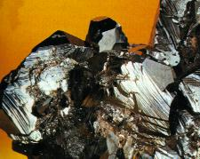
FIGURE XIV
(hématite ou fer
oligiste, Île d'Elbe, Italie)
oligiste et dans le fer
spéculaire. On le prépare par cristallisation du vitriol
vert. Ce sel, après avoir perdu son eau, se décompose
au rouge en anhydride sulfurique, gaz sulfureux et peroxyde de fer.
2SO4Fe
--> SO2 + SO3 + Fe2O3
On obtient ainsi une poudre rouge bien
connue sous le nom de colcothar. Ce corps
est amorphe tandis que le fer oligiste est cristallisé en rhomboèdres
aigus. H. Deville est parvenu récemment à convertir l'oxyde
ferrique amorphe en oxyde cristallisé, en chauffant le premier au
rouge au milieu d'un courant très lent de gaz chlorhydrique. La
rouille est un hydrate
ferrique, combinaison d'oxyde ferrique et d'eau qui possède
ordinairement la composition :
2Fe2O3
+ 3H2O
Un tel hydrate se rencontre aussi dans
la nature. Un autre hydrate naturel, Fe2O3
+ H2O, est connu sous le nom de goethite.
|
extrait
du Cours de chimie de Wurtz
Corrélat
alchimique =
le Soufre du fer donne la teinture de certaines variétés
de rubis, de saphir, de spinelle, du péridot ou de la chrysolite
[olivine],
de la tourmaline. Cet hydrate ferrique correspond peut-être à
ce que Fulcanelli appelle «humide
radical métallique » ; nous avions, en effet,
évoqué dans la section sur le Mercure la posibilité
que cette expression ait été réservée à
l'hydrogène sulfuré. Il nous paraît à présent
qu'elle serait plus appropriée pour définir un oxyde hydraté.
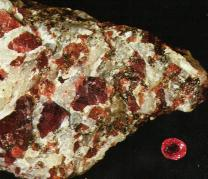
FIGURE
XV
(rubis
sur quartz, norvège et rubis taillé, Birmanie)
Le corindon
-
du mot corund - nom que lui donnent les Indiens, est composé d'alumine
presque pure. Il est la base de toutes les pierres précieuses dites
orientales, les plus belles et les plus estimées après le
diamant. Il peut présenter toutes les couleurs connues ainsi que
les nuances intermédiaires. Au XIXe siècle, M.
Gaudin, Ebelmen, H. de Sainte-Claire Deville, Caron sont parvenus à
produire de petits cristaux ayant tous les caractères du genre corindon
[cf. section du Mercure].
Le beau rubis oriental est plus rare et plus cher qu'un beau diamant. C'est
un corindon coloré par l'oxyde de fer. Pour être parfait,
il doit être d'un rouge éclatant et foncé ; il y en
a de couleur gelée de groseille et de violets. Il est souvent altéré
par des reflets laiteux. Le rubis oriental a la réfraction double
et subit la plus grande violence du feu sans altération de forme
et surtout de couleur.
La tourmaline
est une pierre précieuse qui s'appelle aussi aimant de Ceylan, aphrisite
; elle est composée de silice, d'alumine et d'oxyde ferrique, avec
des quantités notables d'acide borique, de potasse et de magnésie.
il en existe plusieurs variétés : les rouges que l'on appelle
rubéllites ; les bleues, indicolites ; les vertes, émeraudes
du Brésil. Les tourmalines deviennent électriques quand on
les échauffe et elles présentent alors un fait remarquable
: une de leurs extrémités s'électrise positivement,
tandis que l'autre s'électrise négativement. elles polarisent
la lumière et les physiciens en font usage pour étudier la
nature de la double réfraction dans les cristaux.
Soufres
du chrome
Nous avons
déjà parlé du chrome dans d'autres sections (1,
2,
3) en raison de l'importance suscitée
par ce métal dans la composition de certaines gemes orientales.
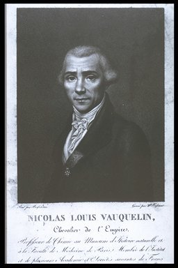
portrait de Vauquelin
Le chrome a été découvert
par Vauquelin en 1797 ; les alcalis fixes, leurs carbonates et leurs nitrates
l'attaquent par la voie sèche et le convertissent en acide chromique.
Le protoxyde de chrome est d'un beau vert d'herbe ; l'oxyde de chrome ne
se combine pas très fachlement avec les flux vitreux, et souvent,
il reste disséminé dans les verres en grains pulvérulents
; avec le borax, il fond difficilement et donne un verre d'un beau vert-émeraude.
Le chromate acide ou bichromate de potasse [alun
de chrome] cristallise en larges tables rectangulaires. Il
est d'un très beau rouge-orange. il se fond sans s'altérer
au rouge naissant, puis à une chaleur plus forte, il se décompose
en partie et il s'en sépare de l'oxyde de chrome sous forme de paillettes
micacées d'un vert intense. Chauffé dans un creuset brasqué,
sans addition, à 1500°C, il donne un culot caverneux d'oxyde
de chrome d'un vert foncé, enveloppé d'une pellicule de chrome
métallique. Le bichromate de potasse se fond facilement à
la chaleur rouge avec du carbonate de chaux : il se forme des chromates
doubles ; ces composés sont d'un jaune bleuâtre et renferment
une certaine quantité d'oxyde de chrome. On fait [au début
du XIXe siècle] un très grand usage des chromates alcalins
dans la teinture, surtout de bichromate de potasse. On les prépare
avec les minerais qui portent le nom de fer chromé et qui sont des
composés d'oxyde de chrome, de peroxyde de fer, d'alumine et de
silice.
Le protoxyde de chrome natif est d'un
vert-poireau un peu grisâtre ; on ne le trouve en petites quantités
qu'au Couchet, dans le département de Saöne-et-Loire, dans
l'arkose [sorte de grès]
et en Dalécarlie, dans un porphyre.
La wolkonskoïte d'Okhusks, à
Pern en sibérie, paraît être une sorte d'écume
de mer colorée par de l'oxyde de chrome. Ce minéral se trouve
en veines minces et en nids dans un grès. Sa couleur est le beau
vert d'herbe.
Le spinelle rouge ou rubis est un minéral
rare. M. Vauquelin l'a trouvé composé de :
Alumine.................0.8247
Magnésie..............0.0878
acide chromique....0.0618

FIGURE
XVI
(rubis,
Inde)
L'émeraude : celle qui contient
de l'oxyde de chrome est d'un très beau vert-poireau et ordinairement
transparente ; celle qui ne contient pas de chrome est d'un vert pâle
ou même incolore, transparente ou opaque. L'émeraude est composée
de :
silice....................0.685
Glucine................0.125
oxyde de chrome..0.03
oxyde de fer.........0.001
Les serpentines, enfin, sont des pierres
qui ne renferment ordinairement que des traces d'oxyde de chrome.
|
extrait
des Essais par la voie sèche de Berthier
Corrélat
alchimique =
teinture du corindon aboutissant au rubis spinelle.
M. Gaudin
a communiqué à l'Académie des Sciences un important
mémoire sur la formation de ces gemmes. C'est vers 1838 qu'il a
obtenu des rubis
artificiels au feu du chalumeau oxy-hydrogène. Ces rubis étaient
identiques aux rubis naturels sous le rapport de la composition chimique,
de la dureté et de la couleur ; mais ils manquaient de limpidité
en raison d'une cristallisation partielle que le savant chimiste n'avait
encore pu éviter pour les gros globules. A cette époque,
il obtint aussi une géode de corindon discernable à l'oeil
nu ; elle avait été produite en fondant avec un chalumeau
en platine dans un creuset de noir de fumée, un fragment d'alun
potassique. 500 g du même alun qu'il avait remis à M. Brongniart,
pour le calciner dans le four à porcelaine de Sèvres, s'étaient
transformés, au grand étonnement du célèbre
minéralogiste, en une masse pesante, à particules brillantes,
qui était un véritable corindon
compact artificiel. M. Gaudin a voulu aussi
produire des cristaux isolés en évaporant partiellement le
dissolvant ou en provoquant un refroidissement lent, propre à accroître
les cristaux suspendus dans un liquide pâteux. Pour produire ces
cristaux, il introduit dans un creuset ordinaire, brasqué avec du
noir de fumée, parties égales d'alun et de sulfate potassique,
préalablement calcinés et réduits en poudre. En cassant
le cruset, 15 min. après, on trouve dans le creux de la brasque
une concrétion hérissée de points brillants composée
de sulfure de potassium, empâtant les cristaux d'alumine. Ce procédé,
toutefois, ne permet pas d'obtenir des pierres colorées, à
cause du pouvoir destructeur du carbone, qui transforme en globules métalliques
tous les oxydes colorants. Les cristaux sont d'autant plus gros que l'on
agit sur de plus grandes masses et avec une durée
de calcination plus longue. La limpidité de ces cristaux est extrême
; avec un microscope de 300 diamètres, les bases de rhomboèdre
montrent des triangles équilatéraux formés par des
lignes d'une pureté exquise, et dans un de ces triangles, on voit
quelquefois trois cents pierres de couleur entables hexagonales qui sont
séparées de la abse par une marge très pure. D'après
les recherches de M. Gaudin, c'est le sulfure de potassium qui devient
un disolvant de l'alumine ; car on obtient les mêmes cristaux en
plaçant dans la brasque de l'alumine
calcinée
avec du sulfure
de
potassium [cf.
la section sur la Pierre].
En conséquence, les sulfures, les fluorures, c'est-à-dire
les composés binaires résistant considérablement à
la décomposition, à la volatilisation, pourraient nous forunir
les moyens d'obtenir une foule de cristaux insolubles. Il semble même
que Gaudin ait été sur la voie du diamant
de synthèse, puisqu'il est parvenu en plaçant dans la brasque
du sulicate de potasse avec du sulfure de potassium, à obtenir un
verre enfumé exempt d'alumine et de bore, qui raye le rubis.
Soufres
du cuivre :
Il existe dans la nature du cuivre
natif mais le principal minerai de ce métal est un sulfure double
de cuivre et de fer. Ce minerai est d'abord soumis à un grillage
qui transforme le sulfure de fer en oxyde de fer
et anhydride sulfureux. L'oxyde de fer passe dans les scories
siliceuses à l'état de silicate fusible. Le produit de cette
première opération se nomme matte.
La matte, soumise à un traitement
identique à celui que nous venons de décrire, achève
de se dépouiller de fer et donne ce que l'on appelle une matte blanche.
En grillant ensuite la matte blanche, on obtient le cuivre brut : le sulfure
de cuivre se transforme, en effet, en anhydride sulfureux et oxyde
de cuivre, et ce dernier oxyde réagit sur le sulfure non
encore décomposé, en donnant naissance à du cuivre
et à de l'anhydride sulfureux.
En grillant le cuivre brut dans un four
siliceux, on détermine la formation d'une certaine quantité
d'oxyde qui achève d'éliminer le soufre en même temps
que les oxydes des métaux étrangers s'unissent à la
silice du four et forment des silicates qui passent dans les scories...
Le protoxyde de cuivre CuO peut être
obtenu en chauffant du cuivre à l'air ; en calcinant l'azotate de
cuivre ; en chauffant l'hydrate cuivrique ; en recueillant les scories
et en les traitant à part. Le protoxyde de cuivre est une poudre
noire et amorphe qui résite à une très haute
température sans se décomposer ni se fondre. Lorsqu'on la chauffe trop fortement, toute
la masse se réunit en un seul bloc, qui présente une extrême
dureté et qui, lorsqu'on la concasse, a une couleur jaunâtre.
Cet oxyde paraît être dans un état allotropique. Cet
oxyde forme avec l'eau un hydrate qui se précipite sous forme d'un
magma épais, bleu clair, lorsqu'on ajoute de la potasse à
une solution cuivrique. Soumis à l'ébullition avec de l'eau,
cet hydrate se convertit en oxyde anhydre brun. On s'en sert dans l'industrie
pour colorer le verre auquel il donne une
teinte verte.
|
extrait
des Cours de chimie de Ad. Wurtz et de A. Naquet
Corrélat
alchimique =
le soufre du cuivre intervient dans la teinture de la malachite, de la
turquoise et dans l'imitation de l'émeraude.

FIGURE
XVII
(turquoise
sur matrice, Nevada, USA)
La turquoise
est une pierre précieuse d'un bleu opaque ; au Moyen Âge,
on lui avait donné le nom de turchis, ou pierre de Turquie. On en
distingue de deux espèces :
-la turquoise de
vieille roche, que l'on appelle aussi turquoise pierreuse ou calaïte
; on la trouve en rognons ou en petites veines ; elle se compose de phosphate
d'alumine, coloré par un peu d'oxyde de cuivre. L'autre espèce,
que l'on appelle turquoise de nouvelle roche, turquoise osseuse ou odontolithe,
provient des dents ou des os de mammifères enfouis dans le sein
de la terrre, et accidentellement colorés en bleu verdâtre.
On imite parfaitement la turquoise par des émaux.
Concernant l'émeraude,
nous estimons qu'elle était hors de portée des anciens alchimistes
mais elle vaut la peine qu'on s'y arrête car nous aurons des choses
intéressantes à dire au sujet de la cause de sa coloration.
En effet, Vauquelin, après avoir découvert l'oxyde de chrome,
a attribué à cet oxyde la couleur verte de cette pierre ;
mais M. Leroi, en 1858, a publié des recherches concernant le gisement,
la formation et la composition des émeraudes de Muso, dans la Nouvelle-Grenade
[île des Petites-Antilles].
Il a attribué la coloration verte de cette émeraude, et en
général des émeraudes, à la présence
d'une matière organique volatile qui paraît être un
carbure d'hydrogène dont la quantité semble croître
et décroître avec l'intensité de la nuance. Cette nuance
serait absolument inexplicable par la quantité infiniment petite
d'oxyde de chrome, et tout à fait disproportionnée à
l'énergie colorante que cet oxyde porte dans d'autres composés
minéraux, comme dans certaines variétés de grenat.
Dans son rapport sur les Progrès de la Géologie
expérimentale, G. Delafosse parle de la coloration
des minéraux et aborde le cas de l'émeraude :
Depuis l'époque de Haüy
on supposait généralement que les couleurs
accidentelles des minéraux pierreux, et notamment des gemmes ou
pierres
précieuses, étaient dues à l'interposition
de molécules d'oxydes métalliques,
tels que les oxydes de chrome, de fer, de manganèse, etc. et on
attribuait à ces couleurs une assez grande fixité. Mais déjà
plusieurs savants avaient fait la remarque que beaucoup de ces couleurs
sont
altérables par l'action de la chaleur,
qui les modifie ou les fait complètement disparaître, et que
par conséquent elles doivent avoir pour principe colorant une matière
d'un caractère fugace. Dans son mémoire sur les émeraudes
de colombie [Recherches sur la
formation et la composition de l'émeraude, Comptes rendus Acad.
Sci., t. XLVI, 1858],
M. Léwy avait rapporté à une
matière
organique la couleur verte de ces émeraudes, que depuis Vauquelin
on attribue uniquement à l'oxyde de chrome. Il avait eu recours
à l'intervention de cette matière, après avoir constaté
sa présence dans toutes les émeraudes qu'il avait analysées,
et après avoir reconnu que sa proprotion croissait avec l'intensité
de la couleur, tandis que celle-ci n'était nullement en rapport
avec la quantité de l'oxyde, toujours très petite, même
dans les émeraudes de nuances très foncées. M. Léwy
avait aussi observé la décoloration
des émeraudes vertes par l'action de la chaleur, quand elles sont
chauffées jusqu'au rouge. Ce fait a été contesté
; mais s'il est des émeraudes chez lesquelles la couleur verte résiste
au feu, il en est d'autres où elle subit des altérations,
comme l'a reconnu M. Fournet...[M. Fournet] a publié, en 1860, dans
les Comptes rendus de l'Académie des sciences [t.
LVIII], une suite de notices dont le but est de rejeter,
au moins comme prépondérante, l'influence des oxydes métalliques
dans la coloration des pierres, et de faire intervenir pour l'expliquer,
à côté des oxydes, des principes d'une nature moins
stable, qui seraient le plus souvent la véritable
cause de cette coloration. Il admet en conséquence la diffusion,
dans un grand nombre de minéraux et de roches, d'une matière
organico-minérale du genre des bitumes et des pétroles,
et c'est elle qui remplirait le plus souvent le rôle de principe
colorant dans les émeraudes, les zircons, les topazes, les
tourmalines, les quartz, les micas, etc. il pense qu'avec cette seule matière,
retenue par affinité capillaire entre les molécules des cristaux,
la nature peut obtenir les nuances les plus variées,
non seulement dans la même espèce, mais encore dans le même
échantillon.
Il existe en effet des minéraux
qui peuvent recevoir artificiellement une teinture
organique de ce genre, et qui par conséquent auraient pu
la devoir à des causes naturelles. Les observations microscopiques
de MM. Brewster et Sorby sur les cristaux guttifères nous ont appris
d'ailleurs que beaucoup de substances [les
quartz, les topazes, les béryls, etc.] réputées
anhydres contenaient dans leur intérieur de très petites
cavités remplies d'eau et de matières volatiles qui ne se
dégagent qu'à une très haute température. Plusieurs
[les tourmalines et les quartz]
montrent des couleurs variables et mobiles au gré du lapidaire ;
et dans certains minéraux, comme les micas et les béryls,
la matière colorante forme des nébulosités qui se
résolvent sous le microscope en une multitude de petites cavités
vésiculaires.
|
extrait
d'un Rapport sur les Progrès de la minéralogie, Gabriel
Delafosse
Ce texte
est du plus grand intérêt car il nous donne de nouvelles pistes
à la recherche des Soufres tinctoriaux des aluminates et des silicates
qui méritent de plus amples recherches ; ainsi, n'y aurait-il pas
que les rouilles des métaux qui seraient responsables de la coloration
des pierres précieuses qui fascine tant l'esprit...
Soufre
du magnésium
L'oxyde de magnésium MgO
peut se préparer en calcinant l'hydrate, le carbonate ou l'azotate
de ce métal. C'est surtout à partir du carbonate qu'on le
prépare. Ce carbonate est lui-même préparé à
parit du sulfate de magnésium. Ce dernier corps s'obtient à
partir de la dolomie, double carbonate de magnésium et de calcium
qui abonde dans la nature. On traite ce minerai par de l'huile de vitriol.
Il se dégage de l'anhydride carbonique et il se forme à la
fois des sulfates de calcium et de magnésium. On les sépare
facilement par cristallisation du fait que le sulfate de magnésium
- contrairement au sulfate de calcium - est très soluble. Lorsqu'on
précipite la solution du sulfate de magnésie par un carbonate
alcalin, il se dégage de l'anhydride carbonique et l'on obtient
un précipité qui, lavé, desséché et
mis sous forme de cubes, est vendu sous le nom de magnésie blanche,
Magnesia alba. L'oxyde de magnésie préparé à
partir du carbonate est extrêmement léger : c'est un corps
blanc, infusible aux plus hautes températures. Il se dissout facilement
dans les acides.
|
Extrait
du Cours de chimie de F.J. Malaguti
Corrélat
alchimique =
On utilise le Soufre du magnésium pour la teinture du péridot
et de la chrysolithe [olivine]
en association avec le Soufre du fer, dans les grenats et la spessartine,
la serpentine, le spinelle.
Le grenat,
employé en bijouterie come pierre fine, est essentiellement composé
de silice et d'alumine ; mais ces substances y sont souvent unies au fer,
à la chaux, au manganèse et à la magnésie.
Les grenats doivent leur nom à la couleur de feu de la fleur du
grenadier [punica granatum], sont en général opaques ; ils
sont en général bien plus fusibles que la silice, fait remarquer
M. Gaudin, et ils donnent facilement des fils d'une grande ténuité
et d'une remarquable flexibilité. Les grenats sont pour la plupart
rouges vifs et vermeils ; quelquefois coquelicots, orangés, jaunâtres,
verdâtres et bruns-noirs. Certains grenats couleur de sang brun,
exposés à la lumière, paraissent comme des charbons

FIGURE
XVIII
(almandin
sur micaschiste du Zillertal, Autriche)
embrasés ;
le grenat violacé est regardé comme le plus parfait et c'est
aussi le plus estimé. Les grenats de bohême sont d'un rouge
vineux, de couleur forte, qu'ils ne perdent que très difficilement
par le feu. On ne sait au juste si celui qui est d'un rouge de feu très
vif, est l'escarboucle [carbunculus]
des Anciens, qui, à ce qu'ils prétendaient, étincelait
de lumière dans l'obscurité. il est de fait que le rubis
[de ruber, rouge],
de tout temps fort estimé, a été compris dans l'antiquité,
parmi les escarboucles, carbunculi, nom appliqué à toutes
les pierres précieuses dont la transparence rappelle celle d'un
charbon incandescent.
Soufre
du manganèse
Il s'obtient à partir du
minerai naturel de manganèse, soit la pyrolusite
que l'on rencontre abondamment dans la nature. Ce bi-oxyde de manganèse
est aussi appelé savon des verriers parce qu'il enlève au
verre des restes de charbon et le décolore. Il se présente
sous la forme d'une masse d'un brun noir brillant. Chauffé au rouge,
il se convertit en oxyde rouge. On connait au manganèse 6 combinaisons
possibles avec l'oxygène. L'oxyde manganeux (MnO) se présente
sous la forme d'une poudre verte. Il prend feu au contact d'un corps incandescent
et se convertit alors en poudre rouge brun qui est l'oxyde rouge de manganèse
(Mn3O4). Il est analogue à l'oxyde magnétique
de fer ; il constitue le minéral que l'on nomme haussmannite. L'oxyde
manganique (Mn2O5) se rencontre dans la nature à
l'état cristallisé : c'est la braunite. Il est isomorphe
avec l'alumine et le sesqui-oxyde de fer.
|
extrait
du Cours de chimie de Ad. Wurtz
Corrélat
alchimique =
le Soufre du manganèse est utilisé comme teinture dans le
grenat spessartine, l'améthyste, l'agate.
L'améthyste
vient du grec amequstoV,
parce que les Anciens attribuaient à cette pierre la propriété
de préserver de l'ivresse ; c'est pour cela qu'ils gravaient sur
les coupes luxueuses faites avec ce précieux minéral les
formes de Bacchus et de Silène. L'améthyste est une gemme
appartenant au quartz transparent, coloré par l'oxyde de manganèse
d'une belle couleur violette-pourprée ; elle est d'un éclat
splendide, d'une teinte admirable qui porte à une rêverie
douce et mélancolique ; elle est susceptible d'un très beau
poli et est très estimée. Elle se montre dans les filons,
unie au quartz et à l'agate. Elle se taille presque toujours de
forme ovale très épaisse. Cette gemme était une des
douze pierres qui composaient le pectoral du grand prêtre des Juifs,
le nom d'Issachar y était gravé. Sa couleur est aussi le
signe distinctif de la dignité des Evêques
de l'église chrétienne ; elle est adoptée pour orner
leur anneau pastoral, ce qui l'a fait nommer pierre d'évêque
[l'évêque
renvoie en alchimie au Mercure philosophique].
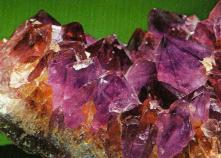
FIGURE
XIX
(partie
d'une druse d'améthyste, Brésil)
L'agate
(qui doit aussi sa coloration
à l'oxyde de fer), est une pierre
translucide, étincelant sous le briquet, rayant facilement le verre,
ornée de couleurs riches et variées. Elle a pour base la
silice. C'est une variété de quartz renfermant tous ceux
qui n'ont pas l'aspect vitreux. Son nom vient d'Achates, fleuve de Sicile,
sur les bords duquel on trouvait ces gemmes. Les agates prennent différents
noms, suivant la diversité d leurs couleurs. Lorsqu'elles affectent
la belle nuance de rouge-cerise, on les appelle cornalines
; la couleur orange plus ou moins foncé leur fait donner le nom
de sardoines.
La sardoine est très anciennement connue : Mithridate en avait une
collection de quatre mille ; elle était également très
estimée : on raconte que Polycrate, tyran de Samos, en jeta une
à la mer comme ce qu'il avait de plus précieux, afin de faire
un sacrifice à la Fortune, qui l'accablait de ses faveurs. cette
pierre fut, paraît-il, retrouvée dans les entrailles d'un
poisson [voila un point où
l'histoire rejoint l'allégorie alchimique...].
Lorsque les agates sont colorées en vert tendre, elles prennent
le nom d'aphrases ou de chrysophrases
; en vert foncé, celui d'héliotropes
; en bleu de ciel, celui de saphirines
; on leur donne le nom de calcédoines
lorsqu'elles sont nébuleuses, blanchâtres, laiteuses ou bleuâtres.
On les appelle herborisées ou arborisées lorsqu'elles offrent
dans l'intérieur de leur pâte des représentations d'arbres
ou d'herbes, et mousseuses lorsqu'elles semblent renfermer de la mousse.
Ces phénomènes sont produits par différents métaux
à l'état d'oxyde, tels que le fer ou le manganèse,
qui, dissous dans un fluide, ont pénétré lentement
ces agates lors de leur formation. Cette gemme se rencontre quelquefois
en boules pleines de quartz hyalin [cristal
de roche], de diverses nuances. Sciées
transversalement, elles représentent des espèces de bastions,
que leur régularité a souvent fait rechercher pour les collections.
L'agate se trouve aussi en boules creuses, dont les parois sont tapissées
de cristaux colorés ou remplies d'une substance terreuse, ou renferment
un noyau solide de craie. On désigne cette variété
sous le nom de géode.
D'autres fois, ces boules creuses sont remplies d'eau. On appelle onyx
[d'un mot grec qui veut dire
ongle] une variété d'agate
dont la couleur approche de celle de l'ongle. On donne aussi ce nom à
celles qui sont remarquables par la vivacité de leurs
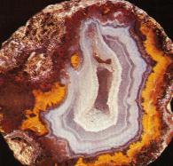
FIGURE
XX
(agate
avec cavité centrale, Mexique)
couleurs et par la
régularité de leurs zones. Quelquefois, la disposition des
zones leur imprime une grande ressemblance avec la prunelle de l'oeil,
et lui fait donner le nom d'agate oeillée. sous la main des graveurs,
ces variétés servent à faire les plus beaux camées.
Les Anciens, qui ont excellé dans la gravure sur pierres fines,
se sont surtout servi de magnifiques onyx, qu'ils faisaient venir de l'Arabie
et de l'Inde. L'extrême dureté et la finesse de ces pierres
leur ont fait mériter le titre d'onyx oriental.
L'art est parvenu
à décolorer ces pierres : on les blanchit en les plongeant
dans de l'acide muriatique que l'on porte au degré de l'ébullition
; on peut les colorer par deux procédés. Le premier est dû
aux Indiens [ce peut être
un détail de technique à remployer en pratique alchimique].
Les Indiens colorent les agates en les faisant bouillir dans de d'huile,
et ensuite, dans de l'huile de vitriol. L'ébullition a pour effet
de chasser l'air contenu dans les pores, et l'huile qui s'y est introduite
étant brûlée par l'huile de vitriol, il se développe
une belle couleur noire qui règne dans les veines opaques, tandis
que les veines transparentes restent sans altération, et que d'autres
passent à une blancheur plus éclatante ; d'où résultent
des contrastes qui ajoutent tant à la valeur de ces gemmes. Les
veines opaques se trouvant seules colorées, il paraît qu'elles
sont beaucoup plus poreuses que les autres, qui s'opposent à l'introduction
de toute couleur. Le deuxième procédé est moderne
et nous ne le détaillerons pas ici.
Soufre
du zinc
[Nous avons
déjà longuement abordé le zinc
dans d'autres sections].
La blende (sulfure
de zinc) se transforme en oxyde par oxydation. Le protoxyde
de zinc est préparé directement par la combustion directe
du métal. Dans les fours, l'oxyde produit, calciné avec du
charbon, donne du zinc métallique. L'appareil qui est destiné
à cette réduction peut être tel que le métal
fonde et s'écoule à mesure qu'il devient libre : on dit que
l'on emploie la méthode per escendum ; mais on peut aussi faire
usage d'appareils dans lesquels le zinc se réduit en vapeurs et
distille : c'est ce qui constitue la méthode per ascensum [ces
méthodes ont ét décrites par Djabir].
L'oxyde de zinc est produit par la combustion directe du métal.
a cet effet, on chauffe du zinc jusqu'à ce qu'il répande
des vapeurs et on l'enflamme ; la fumée est entrainée par
un courant d'air dans une série de chambres où l'oxyde de
zinc se dépose. L'oxyde de zinc ainsi préparé se nommait
autrefois lana philosophorum, nihilum album, fleurs
de zinc, pompolix. L'oxyde de zinc est blanc à la température
ordinaire ; il jaunit lorsqu'on le chauffe et reprend sa couleur première
en se refroidissant. Lorsqu'il provient de la calcination du métal,
il est léger et floconneux ; lorsqu'il a été préparé
à l'aide du bisulfite, il présente un aspect spongieux et
est également très léger.
|
extrait
du Cours de chimie de F.J. Malaguti
Corrélat
alchimique =
le Soufre du zinc est employé comme teinture dans la gahnite,
la hyacinthe (zircon).
Le zircon, incolore, bleu, brun, orangé, rouge [hyacinthe]
ou jaune [jargon]
possède une dispersion élevée provoquant un scintillement
coloré.

FIGURE
XXI
(cristaux
de zircon dans une roche mère, Oural, Russie)
Nous mettrons à
part des pierres précieuses dont nous pensons qu'elles étaient
réellement hors de portée des alchimistes : tel est le cas
-bien que nous en ayons longuement parlé- du rubis
coloré par de l'oxyde de chrome, de
l'émeraude
et de la topaze
[elle nécessite du fluorure
d'aluminium : il faudrait croire que les alchimistes aient eu l'idée
de mélanger de la fluorine, spath fluor, et du kaolin].
Nous n'avons pas, ici, détaillé la « résine
de l'or » dont il apparaît qu'elle est formée d'alumine
dans beaucoup de cas, pratiquement toujours mêlée à
de la silice [cf. section sur
le Mercure].
Néanmoins,
nous considérons à ce stade de notre quête, que le
Soufre
violet, à l'instar du Lion de pierre,
garde encore son secret ! Il est temps, à présent, d'aborder
cet ouvrage de Marc Antoine Gaudin dont nous avons parlé tout à
l'heure.
7)-
Rencontre entre alchimie et minéralogie : la cristallogénie
Cet ouvrage, L'Architecture
du monde des Atomes dévoilant la structure des composés chimiques
et leur Cristallographie, a été rédigé
par Marc Antoine Gaudin en 1873 et publié chez Gauthier-Villars.
De l'introduction de ce travail, nous retiendrons cette remarque :
"...les
mouvements d'un atome chimique sur notre terre sont la résultante
mathématique de toutes les ondulations éthérées
qui lui arrivent avec le temps des abîmes de l'espace infini..."

["
une
autre plaque également exposée représentait un groupe
moins réussi, mais intéressant, dans lequel on retrouve Lerebours,
associé de Secrétan, célèbres opticiens de
cette époque; Martens, l'inventeur de l'appareil panoramique ; Marc-Antoine
Gaudin, calculateur au Bureau des Longitudes, et Adolphe Martin, professeur
de physique dont les recherches scientifiques contribuèrent aux
progrès de l'optique et de la chimie photographique; cette épreuve
appartient à Mme Darlot. Pour toutes les informations concernant
Gaudin frères, vous pouvez consulter avec profit Gaudin Frères,
Pionniers de la Photographie - 1839-1872, par Denis Pellerin, édité
en 1997 par la Société des Amis du Musée Nicéphore
Nièpce, à Châlon-sur-Saône.
" - Marc-Antoine Gaudin, le
seul à porter la barbe, est assis à droite sur ce daguerréotype
-]
Gaudin veut dire
par là à peu près ce que la cosmologie moderne a mis
en évidence, par le biais du « big bang » ; à
l'instant t = 0, il existait une singularité d'un milieu quantique
dont une fluctuation [fluctuation
du vide quantique] est sans doute à
l'origine de notre univers ; d'une certaine façon, on peut donc
affirmer que toutes les particules, tous les atomes sont issus d'entités
tels que les quarks, qui se sont formés au tout début de
l'univers, bien avant la 1ère seconde de son existence.
Cela nous entrainerait trop loin d'en discuter ici. L'éther, nous
le savons à présent, est une chimère mais Gaudin envisageait
par là notre espace-temps, courbé au voisinage de masses
graves, stellaires et planètaires : ces masses sont animées
d'un mouvement décrit par les lois de la gravitation universelle
selon les Principia d'Isaac
Newton ; la courbure de l'espace-temps au voisinage de ces masses
présente des rapports avec la théorie de la relativité
d'Einstein, qui a englobé la théorie de Newton. Nous n'en
dirons pas plus sur le sujet.
a)-
chaux métalliques
De son chapitre IV
: Qu'entend-on par atomes chimiques, nous en
venons [par notre entendement,
bien sûr] aux Soufres métalliques
: de tout temps, on a remarqué que les métaux vulgaires,
le plomb, l'étain, l'antimoine, etc., se mêlaient ensemble
en toute proportion pour produire ce qu'on appelle des alliages
; mais la transformation de ces métaux en une autre substance, de
tout point différent par son aspect et ses propriétés,
fut un phénomène, au premier abord surnaturel [et
qui doit être à l'origine des transmutations métalliques],
qui demeura longtemps inexplicable. Cette transformation s'opérait
surtout en chauffant les métaux, sans qu'on se doutât que
l'air ambiant
[dont
on s'aperçoit ainsi que les anciens alchimistes, surtout Philalèthe,
avaient peut-être eu la pré-science du gaz oxygène
ou du moins la connaissance d'un agent de type « oxydant »]
était pour
beaucoup dans la transformation. On constata d'abord une augmentation de
poids
[régulièrement
observée lors des soi disant transmutations métalliques ;
nous avons eu ailleurs l'occasion de montrer que nombre de rapports de
ces phénomènes devaient cacher des points de processus opératiques]
constamment proportionnelle
au poids du métal transformé ; ce qui finit par donner la
certitude que le métal s'était uni à une nouvelle
matière, faisant partie de l'air lui-même. On dit d'abord
que la matière pulvérulente d'un métal transformé
était la chaux
de ce métal, dénomination bien profonde, car, rigoureusement
parlant, on ne pourrait pas dire [au
XIXe siècle] que
c'est autre chose, la chaux proprement dite étant une transformation
d'un métal, ayant la même origine. Heureusement, qu'on remarqua
bientôt qu'un même métal était suceptible de
donner plusieurs chaux, d'aspect et de propriétés tout à
fait différentes, qui se succédaient l'une à l'autre
avec une augmentation de poids de plus en plus grande ; et, chose singulière,
pour le même poids d'un métal, ces augmentations de poids
successives étaient multiples l'une de l'autre, suivant un rapport
très simple
[que
le lecteur ne pense pas que l'on s'égare ici : car, il l'aura compris,
ces chaux ne sont autre chose que des oxydes,
c'est-à-dire les principes Soufrés qui constituent notre
sujet : l'intérêt du travail
de M.A. Gaudin a consisté à donner une vision que l'on pourrait
qualifier de néo-képlérienne de l'infiniment petit
en étendant aux constitutions atomiques des raisonnements qui s'avèrent
conduire à des proportions que n'auraient pas désavouées
un Giordano Bruno ni un Kepler].
De ce que dans la
chaux d'un métal, on ne pouvait plus distinguer la moindre parcelle
métallique, on pensait bien que le métal y avait pris un
état de grande division ; mais il fallut une oeuvre de génie
pour atteindre la vérité. C'est Dalton,
physicien anglais, qui a supposé que la combinaison avait lieu entre
des particules ultimes auxquelles il appliqua la dénomination d'atomes.
Ainsi, en pesant avec le plus grand soin les chaux obtenues successivement
avec un même métal, on reconnut avec satisfaction, par exemple,
pour le plomb, que son oxyde d'un beau rouge [le
minium] accusait une augmentation de
poids une fois et demie aussi grande que pour le premier degré de
transformation, qui donnait la litharge,
dont la poussière était jaunâtre comme la brique liée
[il
y a là matière à réflexion concernant les définitions
que nous a données Fulcanelli concernant les poids « de nature
» et poids « de l'art »].
Le corps emprunté
par le plomb ayant été reconnu un gaz contenu dans l'air,
et nommé oxygène, on admit que la première combinaison,
ou oxydation, avait eu lieu entre un atome de plomb et un atome d'oxygène,
et par conséquent la seconde, le minium, comprenait deux atomes
de plomb et trois atomes d'oxygène
[voila
pour le poids « de nature » ; c'est la seule définition
rationnelle qu'on en puisse donner, du moins au stade actuel de notre quête].
Pour les corps ne
donnant lieu qu'à un seul oxyde, on crut d'abord que le composé
était un oxyde du premier degré ou protoxyde [on
disait aussi avant oxydule]. Mais plus
tard, on arriva par d'autres moyens à connaître leur rang
dans la série des oxydes. Par exemple, les oxydes se combinant les
mieux avec les acides furent reconnus être des protoxydes, et peu
à peu, on finit par démêler la vérité,
dans les combinaisons les plus complexes, après avoir établi
prélablement le poids relatif des atomes.
|
Exemple
Ce poids relatif des atomes est simple
à obtenir, dès lors qu'il s'agit, par exemple, d'un atome
de métal se combinant à un atome d'oxygène, si le
phénomène a lieu pour une masse tout entière ; car
alors, le poids de l'atome du métal est au poids de l'atome d'oxygène
comme le poids total du métal ayant subi le premier degré
d'oxydation est au poids de l'oxygène ajouté pour produire
cette oxydation. Par exemple, 10 g de plomb produisent invariablement 10.773
g de litharge, et par conséquent le poids de l'atome de plomb est
au poids de l'atome d'oxygène comme 10 g est à 0.773 g, c'est-à-dire
près de 13 fois aussi pesant [référez-vous
supra à l'arcane que dévoile
pratiquement Fulcanelli]. Une fois en possession de cette
clef, on s'aide d'un autre moyen, basé lui sur les combinaisons
qui se produisent entre les corps gazux et qui ont été reconnues
se faire à volumes égaux, ous sous-multiples de deux ou trois
fois ; ainsi donc, on raisonne selon le fait qu'un volume renferme le même
nombre de molécules de tous les gaz, à la même pression
et à la même température [on
appelle cela une mole d'atomes, depuis les travaux d'Avogadro].
|
Gaudin, ensuite,
envisage des arrangements d'atomes en se basant d'abord sur leurs dimensions,
considérées du point de vue des particules « d'éther
»
[on
sait à notre époque que l'éther est une chimère
mais que par contre, l'espace-temps d'Einstein, que Newton assimile en
substance au « Sensorium de Dieu
»,
n'en est pas moins prégnant en toute chose],
sont beaucoup plus
gros que ces dites particules
[qu'on
peut aussi assimiler à notre époque au milieu sub-quantique
qui avait été envisagé par David Böhm ; il faut
tout de même savoir que c'est à partir d'un article de ce
physicien, vers 1952, que Louis de Broglie avait été conduit
à reformuler sa théorie de la « double solution »
concernant le problème de l'interprétation probabiliste de
la mécanique ondulatoire]
et que donc, ces
atomes chimiques sonr formés de particules d'éther agglomérées
[c'est
presque vrai, puisqu'on sait à présent depuis plus de 100
ans que le noyau des atomes est formé de neutrons et protons : or,
ces particules sont elle-mêmes consituées de sous-unités,
dénommées quarks -par référence, soit dit en
passant au Finnegans Wake de James Joyce, et ce seraient
ces quarks qui seraient les véritables briques de la « matière
»].
b)-
les polyèdres magiques
Gaudin pense que
ces atomes peuvent s'agglomérer selon des édifices suivant
des polyèdres réguliers, avec,
successivement le tétraédre régulier centré,
l'octaédre régulier centré, le cube centré,
le dodécaédre régulier centré, qui répondraient
respectivement à 5, 7, 9 et 15 particules réunies entre elles
; puis, on aurait des agglomérations basées sur le réseau
pentagonal de la sphère et sur le diviseur de sa surface en points
de plus en plus rapprochés. Gaudin pense [et
c'est avec raison, puisqu'on sait que l'atome d'hydrogène est constitué
d'un électron et d'un seul proton]
que c'est l'atome d'hydrogène qui s'agglomérerait en nombre
de plus en plus grand pour former des atomes de plus en plus pesants [Gaudin
ne pouvait pas imaginer le neutron, mais l'idée de base s'avère,
au sens conceptuel du terme, absolument exacte].
On ne peut pas ne faire la relation aux polyèdres exprimant les
Quatre Eléments que Platon analyse dans son Timée.
Nous avons évoqué cela dans l'Idée
alchimique, à propos de l'Atlas
des Connaissances humaines de Chevreul. La série
des poids atomiques qu'il envisage ensuite préfigure ce qui allait
constituer la classification périodique de Mendéléïv.
L'idée de base qui a guidé Gaudin a été cette
déclaration de principe :
"...que
dans toute combinaison les atomes des corps composants se mettaient en
commun, pour s'équilibrer à nouveau et former invariablement
un polyèdre géométrique symétrique..."
Ces polyèdres
sont agencés en éléments atomiques linéaires
à 3, 5 et 7 atomes placés parallèlement entre eux.
Il se trouve que, par coïncidence, ces trois chiffres se retrouvent
très souvent dans le symbolisme hermétique, et plus précisément
alchimique ; nous avons vu plus haut et dans d'autres sections le danger
qu'il y avait à faire des spéculations dont les conclusions
étaient uniquement de nature symbolique et n'avaient pas prise directe
avec la matière. Certes, ces chiffres
pris en eux-mêmes [3-5-7]
recèlent un contenu symbolique très puissant et ont été
étudiés par les hermétistes de toutes les époques,
en débutant par les astrologues, en passant par les numérologues,
les kabalistes et en finissant par les devins et les sorciers...Ce que
nous voulons faire toucher du doigt ici, est la possibilité que
ces chiffres renvoient à des symboles alchimiques dont la correspondance
matérielle [c'est-à-dire
avec la matière minérale ou organique]
puisse être dévoilée. Ainsi, le chiffre 3 renvoie-t-il,
selon nous à la lettre C qui donne l'initiale du sujet des Sages
[on consultera à cet
égard la section des Gardes du corps
de François II]. Cette lettreC
peut être renversée et représenter alors la lettreG
[7ème lettre],
qui donne encore l'initiale du sujet des Sages [Gaïa].
La somme des trois chiffres [3+5+7]
donne 15, dont Fulcanelli nous dit qu'il trouve aussi sa correspondance
dans le nom du sujet des Sages. Il se trouve que la 15ème
lettre de notre alphabet est O
[oxygène]...
Entendons-nous bien
: il ne s'agit pas ici de verser dans un ésotérisme qui -
selon nous - ne pourrait mener à rien de tangible,
mais au contraire d'essayer une nouvelle fois, ainsi que nous l'avons réalisé
dans les sections se rapportant aux textes, de retrouver par une autre
voie, un autre chemin, des allusions à des phénomènes
chimiques authentiques, faisant intervenir soit des théories, soit
des faits précis. M.A. Gaudin a développé une théorie
du modèle atomique où se retrouve -qu'on le veuille ou non-
un profil épistémologique typique de Pythagore
ou de Kepler
; la suite sembla avoir montré que la formulation de Gaudin était
d'une part exacte, au sens où il arrivait à réaliser
des prévisions
de composition moléculaire ou à redresser des erreurs dans
les formulations chimiques qui découlaient des recherches des chimistes
et des minéralogistes ; mais d'autre part trompeuse
puisque les relations qu'il établissait entre les atomes de ces
molécules étaient pour le moins fantaisiste : en somme, il
parvenait à des résultats exacts en se basant sur des poids
faux. C'est là sans doute où
se révèle l'intérêt hermétique de l'étude
de la morphogénie cristalline des molécules de Gaudin : elles
donnent à voir une représentation du réel qui s'appuie
sur de pures vues de l'esprit et qui, bien qu'étayée de relations
erronées, n'en conduit pas pour autant à des résultats
inexacts, du moment qu'il s'agit de mettre, littéralement en balance,
des rapports pondéraux de corps réputés simples dont
les valeurs doivent être comprises de manière relative. Or,
il en était strictement de même pour les anciens alchimistes,
disons de l'époque du pseudo-Artephius, ou bien même de l'époque
d'Isaac Newton où seules comptaient les proportions des matières
à mêler.
Le juste poids
de ces proportions, dont l'exactitude toutefois se dérobe à
l'entendement, renvoie à un opérateur d'une portée
très générale et qui trouve dans l'astrologie et dans
l'alchimie deux de ces applications : il s'agit du concept d'harmonie.
Cet opérateur peut, loin de rester une idée vague ou de produire
des inepties, être l'objet d'élaborations mathématiques
et symboliques extrêmement poussées. Précisément,
Jean Kepler,
dans ses cinq livres de l'Harmonie du monde
exprime dans le premier, sa vision géométrique, qui traite
de la démonstration des figures règulières
engendrant les rapports harmoniques et le second traite de la géométrie
figurée et de la congruence des figures régulières
dans le plan et l'espace. Le troisième aborde l'origine des rapports
harmoniques à partir des figures régulières.
Ce n'est pas autrement que Gaudin, en somme, conçoit sa vision du
modèle moléculaire et met ainsi le doigt, sans doute à
son insu, sur la pierre de touche de la philosophie
hermétique. Car, ces rapports harmoniques
cachent un mélange de magie, de philosophie et de poésie
: c'est exactement de la sorte que fonctionnait la pensée d'un Giordano
Bruno, par exemple, à un point tel que l'on rapporte l'épisode
suivant : alors qu'il était en Angleterre, un des docteurs d'Oxford
s'en fut chercher le De vita coelitus comparanda
de Marsile Ficin, pour confronter Bruno à ses sources [il
s'agissait d'une question liée à la discussion du modèle
héliocentrique et du modèle géocentrique]
: en résumé, Bruno venait d'affirmer que Copernic disait
non pas que la lune tourne autour de la terre, mais que toutes deux suivent
le même épicycle. Bruno se trompait, évidemment, mais
la vérité est surtout que pour Bruno, le diagramme de Copernic

FIGURE
XXII
(De
revolutionibus orbium coelestium, Nuremberg, 1543)
que l'on voit ci-dessus
est un véritable hiéroglyphe, un sceau hermétique
derrière lequel se cachent de puissants mystères divins dont
il a pénétré les secrets. On le voit, l'idée
qui guide Bruno est fausse mais elle le conduit à une conclusion
exacte : si son imagination édifie, à partir de la théorie
copernicienne, une image métaphysique
du monde, il est le seul, de son époque, à assigner comme
base à la théorie de la nature les exigences d'un univers
infini. Seul Albert Einstein
pourra expliquer à un peu moins de quatre siècles de distance
cette phrase qui est textuellement écrite dans le Corpus
Hermeticum XII : « d'Hermès Trimégiste ; sur
l'intellect Commun, à Tât » :
"... seule
de tous les êtres elle [la Terre] est à la fois sujette à
une multitude de mouvements et stable..."
C'était par
là affirmer que les mouvements de la Terre ne pouvaient être
perçus que relativement à un ou plusieurs corps célestes,
non moins qu'affirmer qu'il était impossible d'assigner à
la Terre un mouvement, considérée en elle-même : c'est
l'expérience de Morley et Michelson sur le vent d'éther,
incapables de mettre en évidence le mouvement absolu de la Terre
[in G. Holton,
l'Invention
scientifique, PUF, 1982, pp. 289-413].
Plus loin, Gaudin
définit les symboles qu'il utilisera dans les images des molécules
; ainsi définit-il par une croix de Saint-André X
l'atome métallique des sesquioxydes, de l'alumine, du fer, du chrome,
etc. Cet X, nous l'avons bien souvent rencontré
: c'est cette inconnue dont parle Fulcanelli, c'est cet entre-croisement
qui se remarque à la surface du dissolvant « canoniquement
préparé ». Nous trouvons ensuite les premières
représentations moléculaires, et en particulier celle de
l'ammoniaque :
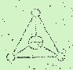
FIGURE
XXIII
Ce triangle exprime
ce que Kepler appelle la « congruence
» des figures : il désigne par ce terme l'aptitude de ces
figures à s'accoupler et à engendrer dans le plan ou dans
l'espace d'autres formes géométriques ; dans le plan, dit-il,
il y a congruence quand les angles de plusieurs figures concourent en un
seul point de telle sorte qu'il ne reste aucun hiatus [c'est-à-dire
pas de solution de continuité].
Il s'agit en somme d'arpentages de carreleur dont Kepler recherche les
lois géométriques et que Gaudin applique à la formation
des molécules. Dans l'espace, il y a congruence quand les angles,
appartenant à plusieurs figures planes constituent un angle solide,
et qu'une fois mutuellement en contact, ces figures régulières
ou semi-régulières
[Kepler
entend ainsi une figure plane dont tous les côtés, mais non
tous les angles, sont égaux : la plus simple est le rhombe],
il ne reste là
encore aucun hiatus qui ne puisse être comblé par une figure
de même espèce que celles qui sont présentes, ou au
moins par une figure régulière. On verra la disposition de
ces figures ci-dessous :
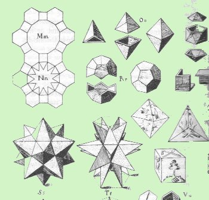
FIGURE
XXIV
(la
congruence, in Kepler, astronome - astrologue, G. Simon, Gallimard,
1979)
Comme on le voit,
la molécule d'ammoniaque
est représentée par l'image n°3 en partant du bord droit
supérieur de la figure XXIV en allant vers
le bas. Elle correspond, au plan hermétique, avec le symbole du
feu. C'est l'oxyde de fer magnétique Fe3O4
qui a fait l'objet du premier exercice de Gaudin. Son image est représentée
-toujours sur la figure XXIV- par le n°4 en partant
de la n°1 du bord gauche supérieur et en allant vers la droite.
Comme on le voit, les 4 atomes d'oxygène
sont disposés en carré orange, au centre duquel vient se
disposer un atome de fer,
figuré en noir. Les 2 autres atomes de fer peuvent être placés
de chaque côté de l'atome de fer central, à égale
distance de celui-ci, dans une droite perpendiculaire au carré formé
par les 4 atomes d'oxygène : on obtient ainsi un octaèdre
à base carrée (double
pyramide quadrangulaire) ; avec ce
solide, on engendre l'octaèdre régulier.
c)-
l'oxyde magnétique
Cette conformation
est confirmée par les spinelles [aluminate
de chrome et de fer] qui sont une combinaison
d'un sesqui-oxyde avec un monoxyde où l'on a, au centre, l'atome
métallique du monoxyde placé entre les deux atomes métalliques
du sesqui-oxyde, comme il l'est entre les 4 atomes d'oxygène mis
en commun pour former un carré perpendiculaire à l'axe des
atomes métalliques ; leur cristallisation s'effectue en octaèdre
régulier, ce qui montre de plus que l'oxyde de fer magnétique
[dont on voit ici l'image sur
la figure XXV] est un spinelle, où
le fer joue le rôle de monoxyde et celui de sesqui-oxyde.
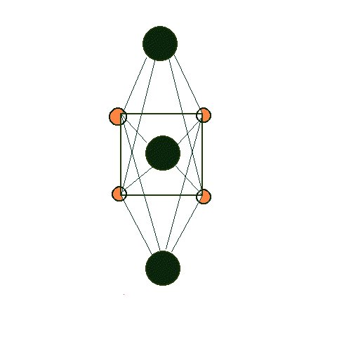
FIGURE
XXV
(molécule
d'oxyde de fer magnétique Fe3O4,
d'après Gaudin))
Donc, nous voyons
que c'est de manière directe la présence du fer qui est à
la base de la conformation moléculaire, c'est-à-dire la présence
du principe Soufré
ou oxydule. On peut ajouter cette remarque de Gaudin qui consitue une sorte
de théorème d'équilibre des atomes entre eux :
"1
atome d'une espèce, placé entre 2 atomes d'une autre espèce,
dans une même droite ; ces atomes étant à une égale
distance les uns des autres, et formant des lignes de croisement sous un
angle de 90° ou de 60°, en engendrant des polyèdres géométriques
symétriques à 3, 4 et à 6 côtés, pour
les molécules cristallisables..."
Ce sont par conséquent
des conditions de stricte symétrie
par rapport à plusieurs axes qui assurent les conditions d'un équilibre
rigoureux ; cet équilibre exige surtout que si un atome d'une espèce
(ici, le fer)
se trouve d'un côté de l'axe, il doive exister un autre atome
de la même espèce, de l'autre côté de cet axe,
dans une même droite passant par le centre. Et maintenant, nous dira-t-on,
quel rapport avec l'alchimie et la pierre philosophale ? A cela, nous répondrons
afin de rappeler nos prises de position et notre hypothèse :
- la pierre philosophale s'offre à
nous comme une substance cristallisée, formée d'un squelette
silicateux-alumineux [Corps],
animé, c'est-à-dire teint, par un oxyde [Âme]
qui détermine la forme cristalline du Corps ; cette conjonction
-sous forme cristalline- de ces deux principes exige un médiateur
qui se présente à nous comme une substance pulvérulente
ou « eau sèche
qui ne mouille point les mains
» à une température ordinaire ; cette substance a le
pouvoir de se liquéfier à une haute température, en
sorte de pouvoir tenir en dissolution des corps infusibles aux plus hautes
températures des fourneaux [au
XIXe siècle]. Cette
substance est ordinairement nommée Esprit dans le langage hermétique
et tel est le cas, puisque cet « Esprit
» est appelé à disparaître par volatilisation
ainsi qu'en témoigne les travaux de Jacques-Joseph Ebelmen.
L'Esprit volatilisé laisse alors la Pierre apparaître, souvent
empâtée dans les résidus mercuriels, qu'une digestion
par de l'esprit de sel ou de l'huile de vitriol permettra d'isoler en un
corps cristallin parfaitement pur. C'est l'Âme -c'est-à-dire
la nature de la « chaux » ou oxyde- qui va réellement
« orienter la Pierre
» en imposant à ces molécules une forme cristalline
particulière, forme dont la base sera en général le
rhombe [cf. figure XXV].
- cette cristallisation ne peut intervenir qu'entre atomes qui aient entre
eux quelque affinité : par exemple, les atomes des métaux
se mêlent en toutes proportions mais ne se combinent jamais entre
eux dans des proportions
définies ; ils conservent donc leur
caractère métallique. Au lieu de quoi, d'autres atomes qui,
en masse, ne présentent pas l'apparence métallique, s'avèrent
être des agents minéralisateurs
: c'est avec ces atomes que les atomes des métaux ont une grande
tendance non pas à se mêler mais à se combiner,
dans des proportions définies et variées. D'une façon
générale, les corps binaires sont astreints dans leur composition
à certaines règles : ils forment ainsi une série d'échelons
qui sont gravis par certains corps ; en nommant A l'atome d'une espèce
et B l'atome de l'autre espèce, la série des combinaisons
est successivement : 2A + 3B
- 2A + 5B - 2A + 7B ; l'aluminate,
par exemple, ne subit jamais que la combinaison 2A
+ 3B [A=
Al ; B= O].
- les molécules cristallisables considérées comme des
équivalents « vulgaires » de la Pierre philosophale
constituent donc des polyèdres géométriques symétriques
qui, pour former des cristaux et pouvoir remplir l'espace avec régularité,
doivent être à 3, à 4 et à 6 côtés
: les polyèdres à 5 et à 7 côtés appartiennent
à des corps incristallisables.
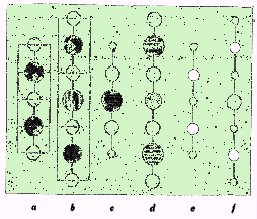
FIGURE
XXVI
(files
d'atomes ou éléments linéaires à 3, 5 et à
7 atomes)
Dans une multitude
d'atomes, l'individualité d'une formule disparaît ou du moins
se coonfine dans une ligne droite ; de là résulte la formation
de files d'atomes à 3, 5 et 7 atomes qui forment les pierres avec
lesquelles toute l'architecture atomique est établie. ainsi, le
membre (a) est-il le sesqui-oxyde : on remarque trois
fois l'existence d'un atome d'une espèce, placé entre deux
atomes d'une autre espèce dans une même droite et à
égale distance des centres entre eux ; le membre (b)
correspond au spinelle où l'on distingue 3 « pierres semblables
» [les gros atomes].
Le membre (d) a, paraît-il, occupé Gaudin
pendant vingt ans et correspond à la réunion d'une molécule
de silice avec deux molécules de monoxyde : il joue un grand rôle
dans la construction de la molécule de grenat.
D'après Gaudin, tous les groupements atomiques des deux règnes
résultent de l'assemblage de ces éléments linéaires
à 3, 5 et 7 atomes, parallèlement entre eux ; de manière
à réaliser, dans n'importe quelle région d'une molécule,
l'élément à 3 atomes, A entre deux B dans le sens
vertical, horizontal, et dans une ligne faisant un angle de 45° avec
l'axe principal. En raison de ces principes, il règne dans chaque
molécule une harmonie
et un ordre admirables qui se retrouvent dans leurs groupements en cristaux.
Ces proportions rappellent le carré magique de 9 qui fournit la
clé de l'énigme. Depuis toujours, astrologues et mathématiciens
chinois [The Antiquity
of Alchemy, H.E. Stapleton, Ambix, 5, 1953, 1-43]
avaient spéculé sur ce carré pour lequel les chiffres
rangés dans les cases sont tels que la somme obtenue soit toujours
15,
qu'on la fasse horizontalement suivant les lignes, verticalement suivant
les colonnes, ou suivant les diagonales. Djabir
mentionne ce carré magique dans le Livre des
Balances et l'attribue à Belinous, c'est-à-dire
à l'auteur du
Traité du Secret de la
Création des Etres.
Il saute aux yeux
que les nombres d'atomes observés par Gaudin [3-5-7]
sont disposés en ligne droite, que l'on prenne le carré tel
qu'il apparaît où qu'on lui fasse opérer une rotation
de P/2.
d)-
le sel de Glauber
Nous pouvons passer
à des molécules plus complexes que celle de l'oxyde de fer
de la figure XXV, telles qu'en réalisent certains
sulfates de soude. La molécule des sulfates avec 13 molécules
d'eau est représentée par une table en croix, qui est couverte
de hachures, les 4 axes principaux étant 2 vis-à-vis des
molécules d'acide sulfureux ; la molécule totale avec 20
ou 21 molécules d'eau serait celle du sulfate
de soude.
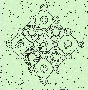
FIGURE
XXVII
(molécule
de sulfate de soude, d'après Gaudin)
Il est évident
que la structure tabulaire centrale évoque par l'entre-croisement
la figure du X, souvent rencontré ; il n'est
pas sans intérêt de remarquer [cf.
section sur le Bain des astres]
que le sulfate de soude intervient dans la préparation du natron
[carbonate
de soude]. Le concept du «
poids
de nature », évoqué
par Fulcanelli, intervient singulièrement dans la grosse question
de la composition des corps cristallisables : les substances solubles dans
l'eau ont des compositions assez bien définies mais il n'en est
pas de même pour les minéraux composés de silice,
d'alumine et de monoxydes, avec ou sans eau
de combinaison. Comme l'affirme Gaudin :
"Pour
un grand nombre, tout ce qu'on a pu faire a été de déterminer
le rapport qui existe entre les quantités d'oxygène afférentes
à chaque corps oxydé..."
e)-
l'idocrase
Gaudin prend ici
le cas de l'idocrase
[silicate
hydraté naturel d'aluminium, de calcium, de magnésium et
de fer, quadratique, dont une variété bleu de ciel est la
cyprine = vésuvianite].
Par le fait que ce
corps cristallise en prisme carré, il considère que la molécule
est quadrangulaire et qu'elle doit renfermer au moins 4 ou 5 molécules
de silice ; la figure suivante montre une image de ce prisme carré
parfait qu'envisage Gaudin.
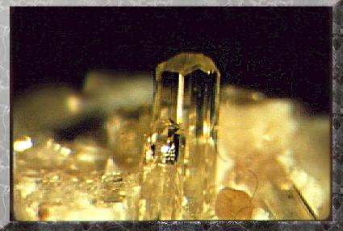
FIGURE
XXVIII
(idocrase)
Nous laissons à
l'appréciation du lecteur l'examen de cette molécule dont
on aperçoit la vue en perspective sur la figure XXVIII.
Selon Gaudin, il serait tout-à-fait impossible de trouver une autre
solution répondant aux données du problème. Pour aider
le lecteur, nous donnons sur la figure ci-dessous un schéma de la
composition d'une demi-molécule d'idocrase
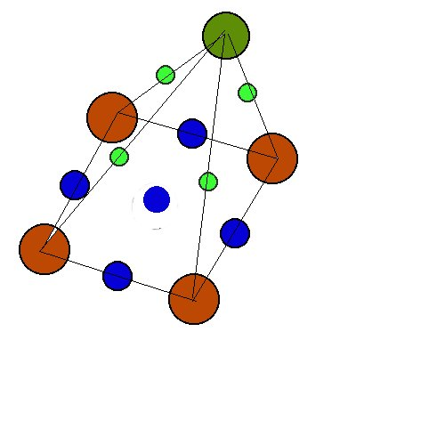
FIGURE
XXIX
(partie
supérieure de la molécule d'idocrase, selon Gaudin)
En rouge sont figurés
4 atomes de silice ; en bleu, 5 atomes de métal ; en vert foncé,
1 atome d'aluminium ; en vert clair 4 atomes d'oxygène des oxydes.
La formule chimique de l'idocrase est : Ca10Al4(MgFe)2
Si9O34(OH)4.
Cette molécule pourrait être accessible à la synthèse
chimique.
Gaudin traite ensuite
des aluns
sur lesquels on s'est déjà souvent arrêté. En
grec, l'alun est assimilé à une Terre astringente [stupthrioV].
Ces corps remarquables tirent leur nom de l'alumine qui entrent dans leur
composition ; en substituant à la molécule d'alumine [qui
est un sesqui-oxyde Al2O3],
d'autres sesqui-oxydes, l'oxyde vert de chrome, l'oxyde rouge de fer, Fe2O3,
Cr2O3, lesquels
oxydes isolés cristallisent en rhomboèdres comme l'alumine,
c'est-à-dire sont isomorphes.
f)-
l'alun
L'alun [cf.
sections sur la
Pierre et les trois schémas
de synthèse
1, 2,
3]
intervient dans la constitution du squelette
de la Pierre ; par les exemples précédents, nous avons montré
aux lecteurs les possibilités qui résultaient de l'emploi
de polygones réguliers, pour des molécules relativement simples.
Avec les aluns, nous passons à une molécule en comptant plus
d'une centaine. La molécule des aluns résulte de la combinaison
du sulfate d'alumine
avec le sulfate de potasse,
renfermant dans son domaine un très grand nombre de molécules
d'eau, au nombre de 24 ; et comme chaque molécule d'alumine, dans
son sulfate, est alliée à 3 molécules d'acide sulfurique,
il s'ensuit que l'ensemble de la molécule d'alun comprend : - une
molécule de potasse - une molécule d'alumine - quatre molécules
d'acide sulfurique - 24 molécules d'eau. Les atomes principaux sont
au nombre de 7, qui sont l'atome de potassium de la potasse, les 2 atomes
d'aluminium de l'alumine et les 4 atomes de soufre de l'acide sulfurique,
et nous avons, pour le centre, l'atome de potassium qui, placé entre
les 2 atomes d'aluminium, forme l'axe, tandis que les 4 atomes de soufre
forment un carré perpendiculaire à l'axe. ainsi, ces 7 atomes
réalisent-ils déjà la formule AB2C4
des spinelles
; ils ne peuvent faire qu'un octaèdre à base carrée
; et, placés entre eux à deux distances d'atomes, ils forment
la charpente de la molécule d'alun autour de laquelle tous les autres
atomes se groupent avec symétrie. Les figures ci-dessous montrent
pour (a) la molécule d'alun potassique en projection,
sur un plan horizontal et pour (b) la même molécule
vue selon une coupe verticale.
|
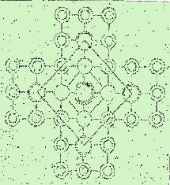
(a)
|
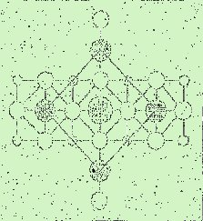
(b)
|
|
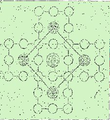
(c)
|
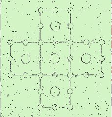
(d)
|
FIGURE
XXX
(la molécule
d'alun, selon Gaudin)
Cette molécule
d'alun, essentielle dans la synthèse de la Pierre, contracte d'étroits
rapports hermétiques : elle est formée, abstraction faite
des atomes d'aluminium et d'oxygène extrêmes que l'on voit
bien de part et d'autre du plan central en (b) de
cinq massifs semblables, de même hauteur, formant la croix (U).
Les cinq massifs sont formés de l'assemblage de trois réseaux
d'atomes superposés à une distance d'atome : un réseau
médian que l'on aperçoit en (c) et deux
réseaux supérieur et inférieur vus en (d),
les deux dernières figures étant considérées
dans un plan semblable à (a). On remarquera
que l'élément linéaire à 7 atomes est représenté
non seulement par l'axe, mais encore deux fois dans le plan du réseau
médian, dans deux directions se croisant à angle droit. En
menant à la surface de ces réseaux des lignes obliques à
45°, on rencontre un grand nombre de fois l'élément linéaire
à 5 atomes A2B3. Dans ce massif formant la
croix, on reconnait non seulement les éléments linéaires
à 3, 5 et à 7 atomes, mais encore des réseaux verticaux
formés d'éléments linéaires triatomiques rangés
par 3, par 4, par 5 et par 7 dans un même plan. Enfin, les cinq massifs
eux-mêmes représentent deux fois un massif d'une espèce,
placé entre deux massifs d'une autre espèce ; et si l'on
prend à chaque extrémité l'atome d'aluminium avec
son atome extrême d'oxygène pour un massif, la molécule
entière est formée de 7 massifs AB2C3,
formant dans leur charpente, ou essence, un octaèdre à base
carrée qui est la forme dominante des cristaux
d'alun. Le chrome ou le fer ne font que se
substituer à l'aluminium, au rang pénultième des 7
atomes formant l'axe. En résumé, nous voyons que la molécule
totale d'alun ammoniacal est formée d'éléments linéaires,
à 3 et à 7 atomes parallèles entre eux et à
l'axe de la molécule. Nous restons entièrement dans notre
sujet car ces atomes pénultièmes sont précisément
les éléments Soufrés
sans lesquels la molécule ne saurait exister. Enfin, Gaudin précise
la formation des cristaux d'aluns : cela le conduit à proposer la
figure suivante qui réalise toujours un octaèdre régulier.
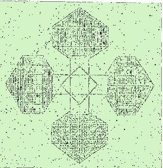
FIGURE
XXXI
(cristal
d'alun)
g)-
stilbite
Nous allons à
présent revenir à Fulcanelli ; on n'a pas oublié que,
dans Myst. tout comme dans les
DM,
l'étoile est évoquée très souvent, de même
que son caractère brillant, éclatant qui « signe
» véritablement la noblesse de son extraction :
"C'est
la fleur (anqemon)
métallique et minérale, la première rose, noire en
vérité...C'est d'elle, cette fleur des fleurs (flos florum),
que nous tirons d'abord notre gelée blanche (stibh)...c'est
elle encore qui, unie à l'or philosophique deviendra la planète
Mercure (Stilbwn),
le nid de l'oiseau (stibaV),
notre Phénix et sa petite pierre (stia)..."
A cela, nous ajouterons
que anqemon
signifie aussi les fleurs d'orichalque et d'or et aussi la fleur du lys
rouge (=
corail) ainsi que par anqemouroV,
celui qui exploite les fleurs, c'est-à-dire les abeilles, sans oublier
le fard [stilbwtron].
Mais, par cabale, le rapprochement le plus intéressant et qui rejoint
notre propos est stilbwn
que l'on peut rapprocher de la stilbite,
qui est un aluminosilicate
hydraté naturel de calcium,
du groupe des zéolites
[les
zéolites ont des propriétés physico-chimiques remarquables,
liées à la mobilité de leur peau, dite zéolitique,
et de leurs cations qui en font des échangeurs de bases].
|
les
zéolites
Il s'agit de substances qui se gonflent
et bouillonnent lorsqu'on les expose à
la flamme du chalumeau ; ils ont été pour la plupart distingués
et déterminés par Haüy. Leur composition comprend de
la silice, de l'alumine, une ou plusieurs bases, chaux, potasse, soude
et baryte et une quantité d'eau variable ; leur couleur est généralement
blanche ; ils sont faciles à décomposer en silice pulvérulente
par l'acide chlorhydrique. La stilbite cristallise
selon un prisme rhomboïdal droit. Les zéolites sont des matériaux
poreux capables de retenir des molécules piégées au
sein de la structure. La forme des pores va dépendre du type de
polyèdres utilisés pour construire le réseau ; selon
la forme adoptée, on obtient le réseau de la lazurite [lapis-lazuli].
Actuellement, depuis 1950, les zéolites sont utilisés pour
comparer les indices d'octane des carburants.
|
Voici la structure
que propose Gaudin pour la stilbite
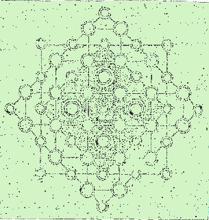
FIGURE
XXXII
(stilbite,
selon Gaudin)
L'intérêt
représenté en alchimie par la stilbite réside dans
sa composition chimique
puisqu'elle permet de dévoiler pratiquement toutes les substances
utilisées ou préparées dans le 2ème
et le 3ème oeuvre :
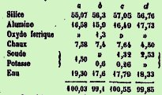
(d'après
Des Cloiseaux)
Le relevé
de l'analyse centésimale se passe de commentaire et met «
en lumière » [stilbw]
les principes qu'il faut employer. A propos de l'aspect en croix observé
dans plusieurs des figures moléculaires qui forment une cristallisation,
il n'est pas sans intérêt de remarquer les relations phonétiques,
en grec, entre le Christ, le cristal et l'action d'enduire [à
la chaux] : un mélange de plâtre
ou de chaux se
dit, par exemple, crisma
de même que l'onction pour consacrer [l'Oint
du Seigneur Jésus-Christ] ;
par ailleurs, le Christ se dit cristoV
et le lierre, krissoV
(kissoV)
renvoyant à Apollon (couronné
de lierre), que nous savons être
le représentant de l'un des composants du dissolvant ou feu secret.
Tous ces jeux de
mots, basés sur des assonances phonétiques -nous le rappelons-
sont du ressort de la « cabale hermétique
» ou « langue des oiseaux ».
Cette méthode pour voiler des secrets ne date pas d'hier et le pseudo-Artephius
au XIe siècle, Fulcanelli nous l'assure, disait que «notre
art est entièrement cabalistique
». Il faut ici soigneusement distinguer l'exotérisme qui se
manifeste lorsqu'on arrive effectivement à dévoiler un «
tour de main » de technique chimique ou physique de l'ésotérisme
compris, par exemple, au sens de la théosophie, qui ne peut - selon
nous - mener strictement à rien, si ce n'est à cultiver l'art
pour l'art ; là n'est pas notre domaine mais nous ne voulons, ici,
porter aucun jugement péjoratif car toutes les formes de pensée,
pourvu qu'elles s'expriment sans agressivité et sans sectarisme,
ont droit de cité sur le Net.
h)-
l'épidote
Nous terminerons
notre revue des structures cristallines Soufrées
par l'examen de l'épidote
; il s'agit d'un alumino-silicate hydraté de calcium et de fer ;
nous mettons côte à côte trois figures qui résultent
de la faon que Gaudin trouve de placer les atomes qui constituent la molécule
:
|
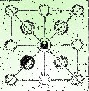
(a)
|
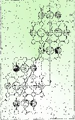
(b)
|
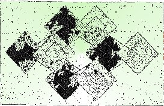
(c)
|
FIGURE
XXXIII
(molécule
d'épidote et prisme de 8 molécules,
selon Gaudin)
La coupe (a)
est une vue en projection d'une molécule ; elle montre 4 carrés
formés par 9 molécules de silice. Au milieu de chaque carré
est implantée 1 molécule d'aluminate de monoxyde, composée
de 7 atomes coomme dans les feldspaths ; au centre et au-dessus comme au-dessous
(b), il existe 1 molécule de monoxyde d'où
résultent un axe à 7 atomes d'un nouveau genre qui représente
la formule AB2C4. L'atome central est un atome de
silicium et les 2 atomes pénultièmes sont des atomes de métal,
mais non les atomes d'un sesqui-oxyde. Le prisme rhomboïdal est représenté
sur la coupe (c). La figure suivante est un échantillon
d'épidote.
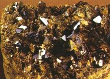
FIGURE
XXXIV
(épidote,
Baja, Mexique)
Nous arrivons au
terme de notre étude -vue sous l'angle d'un hermétisme original,
nous l'espérons- de cette étude des formes
cristallines. Elle aura permis de montrer
que de nombreuses substances cristallines co-existent, dans leur formulation
du XIXe siècle, avec des nombres que l'on retrouve tout
spécialement dans le symbolisme hermétique : 3
- 5 - 7 - 15.
On mesure donc l'étonnante
transformation subie par les produits de la nature, due à un imperceptible
changement de disposition de leurs éléments. Les Anciens
aimaient beaucoup, nous l'avons dit, les pierres de couleur et le livre
de Job nous fait voir combien, dans ces temps reculés [XVIIIe
siècle
av. J.-C.] le corps précieux
étaient connus et recherchés :
Le fer est tiré du sein de
la terre, l'airain est arraché à
la pierre ;
L'homme recule les confins des ténèbres
; il a découvert jusqu'à ces pierres
ténébreuses qui avoisinent les ombres de la mort ;
Là croît le saphir,
là se forme l'or
L'homme brise les rochers,
renverse les montagnes jusqu'à leurs racines ;
Il ouvre un passage aux fleuves, à
travers la pierre et découvre leurs trésors
les plus cachés ;
Mais où trouver la sagesse ? Où
est le séjour de l'intelligence ?
L'or d'Ophir n'en égale pas le
prix ; elle surpasse l'onyx et le saphir
;
Le cristal,
l'émeraude ne sont rien auprès
d'elle, ni les ornements les plus beaux.
Le corail et le béril
s'effacent en sa présence ; elle l'emporte sur les perles
de la mer.
On ne la compare pas à la topaze
d'Ethiopie ; on ne l'échange pas pour les tissus les plus précieux.
|
On croirait se trouver
face à un texte crypté...Mais cela doit être un effet
de notre imagination. Nous retiendrons donc avant tout de ce texte que
la sagesse est le bien le plus estimable qui existe en ce bas monde.
Il reste quelques
pierres précieuses dont nous n'avons pas encore parlé, en
particulier le lapis-lazuli
et l'aventurine.
8)-
Derniers feux
- la
lazulite ou lapis-lazuli
On l'appelle vulgairement
pierre d'azur ; c'est une pierre précieuse d'un bleu magnifique,
souvent parsemée de taches d'or, produites par des parcelles pyriteuses.
Elle se compose d'alumine, de soude et de silice, avec une petite quantité
de soufre. Elle est opaque, à grains serrés ; elle raye le
verre et étincelle sous le briquet. Elle provient principalement
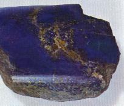
FIGURE
XXXIII
(lapis-lazuli
brut, Afghanistan)
de la Perse. La partie
colorante de cette pierre donne le beau bleu, appelé d'outre-mer,
parce qu'on l'apportait du Levant. On l'obtient par une préparation
chimique qui est une sorte de savonnage. Cette gemme, exposée à
l'action d'un grand feu, se fond en une masse d'un noir jaunâtre
; si elle est seulement calcinée, elle se décolore par les
acides minéraux énergiques et forme alors une gelée.
- l'aventurine
Il s'agit d'une variété
de quartz grenu, demi-transparente, colorée en rouge brun ou en
jaune, offrant dans l'intérieur des points brillants qui ont l'apparence
de paillettes d'or. Il y en a également dont le fond est blanc-rougeâtre,
grisâtre ou verdâtre ; cette dernière offre des points
blancs. On distingue deux espèces d'aventurines naturelles. L'une
dont les étincelles sont produites par des paillettes de mica jaune,
bien connu sous le nom de talc de Moscovie : c'est la plus commune. On
la rencontre dans certaines mines de Silésie, en Bohême, en
France et en Sibérie. La seconde espèce qui est la plus estimée,
se rencontre en Espagne et en Ecosse. Les points lumineux qu'elle présente
sont plus petits et plus brillants et ne sont point formés par des
parcelles de mica répandues dans la pâte, mais par une multitude
de petites fentes, de petites fissures fonctionnant comme celles de l'opale,
et n'effleurant que la surface de la pierre ; elles n'ont qu'une seule
réflexion et ne présentent que la couleur jaune d'or. On
a également donné le nom d'aventurine à une variété
de feldspath
présentant les mêmes caractères extérieurs que
la précédente.
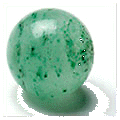
FIGURE XXXIV
(aventurine)
Beaucoup d'essais
ont eu lieu pour arriver à produire des aventurines
artificielles, surout depuis que Venise a
connu le secret d'en faire de magnifiques. Venise devait son aventurine
à l'heureuse maladresse d'un ouvrier qui laissa tomber, par aventure,
un peu de limaille dans un creuset contenant du verre en fusion. Il fut
séduit par l'éclat de ce mélange qu'il appela aventurine
; nom que l'on a donné depuis au genre de pierres naturelles qui
ont de l'analogie avec l'aventurine artificielle. Le secret de cette fabrication
était religieusement gardé et se transmettait de génération
en génération. Cependant, un français, Lebaillif,
essaya de l'imiter mais il n'y parvint qu'incomplètement. Miotti
fut plus heureux dans ses essais et il obtint une pierre qui rivalisa avec
celle de Venise. M. Riboglio, de Venise, après d'incessantes recherches,
est arrivé à composer une aventurine. MM. Frèmy
et Clémandot
ont obtenu de beaux échantillons d'aventurine en chauffant pendant
12 heures un mélange de 300 parties de verre pilé, de 40
parties de protoxyde de cuivre, et de 80 parties d'oxyde de fer des battitures,
puis en laissant refroidir très lentement ce mélange. Une
autre aventurine a été découverte par Jules
Pelouze (1807-1867) et est comparable à
la plus belle aventurine de Venise. Le verre est étoilé de
cristaux du brillant le plus vif. Les innombrables paillettes ont des lumières
métalliques de l'effet le plus éclatant. Plus dure que l'aventurine
de Venise, elle raye et coupe facilement le verre. Voici la formule préconisée
par cet académicien des sciences : 250 parties de sable, 100 de
carbonate de soude, 50 de carbonate de chaux et 40 de bichromate de potasse.
Le verre qui est obtenu de ce mélange contient 6% d'oxyde de chrome
dont la moitié environ, est combinée avec le verre, et l'autre
moitié reste à l'état libre, sous forme de cristaux
en paillettes étincelantes.
[ce
mélange aurait pu être à la base d'une pierre philosophale
si de la silice avait été ajoutée ; nous rangerons
cette aventurine artificielle à la limite entre l'alchimie et la
spagyrie
car les composés du dissolvant universel sont réunis ; il
manque les éléments adéquats du squelette silicato-alumineux].
Il semble que la
principale difficulté à vaincre, dans cette opération,
est d'avoir le tour de main qui répartit également la multitude
des paillettes dans toute la masse, aussi bien à l'intérieur
qu'à l'extérieur, en évitant les agglomérations
partielles.
Bibliographie
1. La
Céramique Islamique. Le guide du connaisseur. Jean
Soustiel, Office du Livre, Fribourg, 1985
2. Traités
de chimie divers et de minéralogie : cf. bibliographie
générale